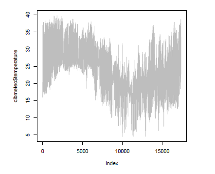

<!DOCTYPE html>

<html lang="es">
  <head>
    <meta charset="utf-8" />
    <meta name="viewport" content="width=device-width, initial-scale=1.0" /><meta name="generator" content="Docutils 0.17.1: http://docutils.sourceforge.net/" />

    <title>Introducción a R &#8212; OHW Español</title>
    
  <!-- Loaded before other Sphinx assets -->
  <link href="../../../_static/styles/theme.css?digest=1999514e3f237ded88cf" rel="stylesheet">
<link href="../../../_static/styles/pydata-sphinx-theme.css?digest=1999514e3f237ded88cf" rel="stylesheet">

    
  <link rel="stylesheet"
    href="../../../_static/vendor/fontawesome/5.13.0/css/all.min.css">
  <link rel="preload" as="font" type="font/woff2" crossorigin
    href="../../../_static/vendor/fontawesome/5.13.0/webfonts/fa-solid-900.woff2">
  <link rel="preload" as="font" type="font/woff2" crossorigin
    href="../../../_static/vendor/fontawesome/5.13.0/webfonts/fa-brands-400.woff2">

    <link rel="stylesheet" type="text/css" href="../../../_static/pygments.css" />
    <link rel="stylesheet" href="../../../_static/styles/sphinx-book-theme.css?digest=5115cc725059bd94278eecd172e13a965bf8f5a9" type="text/css" />
    <link rel="stylesheet" type="text/css" href="../../../_static/togglebutton.css" />
    <link rel="stylesheet" type="text/css" href="../../../_static/copybutton.css" />
    <link rel="stylesheet" type="text/css" href="../../../_static/mystnb.css" />
    <link rel="stylesheet" type="text/css" href="../../../_static/sphinx-thebe.css" />
    <link rel="stylesheet" type="text/css" href="../../../_static/design-style.b7bb847fb20b106c3d81b95245e65545.min.css" />
    
  <!-- Pre-loaded scripts that we'll load fully later -->
  <link rel="preload" as="script" href="../../../_static/scripts/pydata-sphinx-theme.js?digest=1999514e3f237ded88cf">

    <script data-url_root="../../../" id="documentation_options" src="../../../_static/documentation_options.js"></script>
    <script src="../../../_static/jquery.js"></script>
    <script src="../../../_static/underscore.js"></script>
    <script src="../../../_static/doctools.js"></script>
    <script src="../../../_static/clipboard.min.js"></script>
    <script src="../../../_static/copybutton.js"></script>
    <script src="../../../_static/scripts/sphinx-book-theme.js?digest=9c920249402e914e316237a7dbc6769907cce411"></script>
    <script>let toggleHintShow = 'Click to show';</script>
    <script>let toggleHintHide = 'Click to hide';</script>
    <script>let toggleOpenOnPrint = 'true';</script>
    <script src="../../../_static/togglebutton.js"></script>
    <script src="../../../_static/translations.js"></script>
    <script>var togglebuttonSelector = '.toggle, .admonition.dropdown, .tag_hide_input div.cell_input, .tag_hide-input div.cell_input, .tag_hide_output div.cell_output, .tag_hide-output div.cell_output, .tag_hide_cell.cell, .tag_hide-cell.cell';</script>
    <script src="../../../_static/design-tabs.js"></script>
    <script>const THEBE_JS_URL = "https://unpkg.com/thebe@0.8.2/lib/index.js"
const thebe_selector = ".thebe,.cell"
const thebe_selector_input = "pre"
const thebe_selector_output = ".output, .cell_output"
</script>
    <script async="async" src="../../../_static/sphinx-thebe.js"></script>
    <script>window.MathJax = {"options": {"processHtmlClass": "tex2jax_process|mathjax_process|math|output_area"}}</script>
    <script defer="defer" src="https://cdn.jsdelivr.net/npm/mathjax@3/es5/tex-mml-chtml.js"></script>
    <link rel="index" title="Índice" href="../../../genindex.html" />
    <link rel="search" title="Búsqueda" href="../../../search.html" />
    <link rel="next" title="Introducción a Python" href="../python/Python.html" />
    <link rel="prev" title="Introducción a R" href="R.html" />
    <meta name="viewport" content="width=device-width, initial-scale=1" />
    <meta name="docsearch:language" content="es">
    

    <!-- Google Analytics -->
    
  </head>
  <body data-spy="scroll" data-target="#bd-toc-nav" data-offset="60">
<!-- Checkboxes to toggle the left sidebar -->
<input type="checkbox" class="sidebar-toggle" name="__navigation" id="__navigation" aria-label="Toggle navigation sidebar">
<label class="overlay overlay-navbar" for="__navigation">
    <div class="visually-hidden">Toggle navigation sidebar</div>
</label>
<!-- Checkboxes to toggle the in-page toc -->
<input type="checkbox" class="sidebar-toggle" name="__page-toc" id="__page-toc" aria-label="Toggle in-page Table of Contents">
<label class="overlay overlay-pagetoc" for="__page-toc">
    <div class="visually-hidden">Toggle in-page Table of Contents</div>
</label>
<!-- Headers at the top -->
<div class="announcement header-item noprint"></div>
<div class="header header-item noprint"></div>

    
    <div class="container-fluid" id="banner"></div>

    

    <div class="container-xl">
      <div class="row">
          
<!-- Sidebar -->
<div class="bd-sidebar noprint" id="site-navigation">
    <div class="bd-sidebar__content">
        <div class="bd-sidebar__top"><div class="navbar-brand-box">
    <a class="navbar-brand text-wrap" href="../../../index.html">
      
        <!-- `logo` is deprecated in Sphinx 4.0, so remove this when we stop supporting 3 -->
        
      
      
      
      
      
      <h1 class="site-logo" id="site-title">OHW Español</h1>
      
    </a>
</div><form class="bd-search d-flex align-items-center" action="../../../search.html" method="get">
  <i class="icon fas fa-search"></i>
  <input type="search" class="form-control" name="q" id="search-input" placeholder="Search this book..." aria-label="Search this book..." autocomplete="off" >
</form><nav class="bd-links" id="bd-docs-nav" aria-label="Main">
    <div class="bd-toc-item active">
        <p aria-level="2" class="caption" role="heading">
 <span class="caption-text">
  INTERCOONECTA 23
 </span>
</p>
<ul class="current nav bd-sidenav">
 <li class="toctree-l1">
  <a class="reference internal" href="../../index.html">
   Introduccion
  </a>
 </li>
 <li class="toctree-l1 current active has-children">
  <a class="reference internal" href="../index.html">
   Aula Invertida
  </a>
  <input checked="" class="toctree-checkbox" id="toctree-checkbox-1" name="toctree-checkbox-1" type="checkbox"/>
  <label for="toctree-checkbox-1">
   <i class="fas fa-chevron-down">
   </i>
  </label>
  <ul class="current">
   <li class="toctree-l2 current active has-children">
    <a class="reference internal" href="../tutoriales.html">
     Tutoriales de Introducción
    </a>
    <input checked="" class="toctree-checkbox" id="toctree-checkbox-2" name="toctree-checkbox-2" type="checkbox"/>
    <label for="toctree-checkbox-2">
     <i class="fas fa-chevron-down">
     </i>
    </label>
    <ul class="current">
     <li class="toctree-l3 current active has-children">
      <a class="reference internal" href="R.html">
       R
      </a>
      <input checked="" class="toctree-checkbox" id="toctree-checkbox-3" name="toctree-checkbox-3" type="checkbox"/>
      <label for="toctree-checkbox-3">
       <i class="fas fa-chevron-down">
       </i>
      </label>
      <ul class="current">
       <li class="toctree-l4 current active">
        <a class="current reference internal" href="#">
         Introducción a R
        </a>
       </li>
      </ul>
     </li>
     <li class="toctree-l3 has-children">
      <a class="reference internal" href="../python/Python.html">
       Python
      </a>
      <input class="toctree-checkbox" id="toctree-checkbox-4" name="toctree-checkbox-4" type="checkbox"/>
      <label for="toctree-checkbox-4">
       <i class="fas fa-chevron-down">
       </i>
      </label>
      <ul>
       <li class="toctree-l4">
        <a class="reference internal" href="../python/intro_to_python_ohw2022.html">
         Introducción a Python
        </a>
       </li>
       <li class="toctree-l4">
        <a class="reference internal" href="../python/intro_to_netcdf.html">
         Como leer un archivo netCDF
        </a>
       </li>
       <li class="toctree-l4">
        <a class="reference internal" href="../python/read_tabulardata.html">
         Procesar Datos de Tablas y Matrices
        </a>
       </li>
       <li class="toctree-l4">
        <a class="reference internal" href="../python/Intro_to_plot.html">
         Visualizar datos en Python
        </a>
       </li>
      </ul>
     </li>
     <li class="toctree-l3">
      <a class="reference internal" href="../github/Github.html">
       Git y GitHub
      </a>
     </li>
     <li class="toctree-l3 has-children">
      <a class="reference internal" href="../jupyter/Jupyter.html">
       Jupyter
      </a>
      <input class="toctree-checkbox" id="toctree-checkbox-5" name="toctree-checkbox-5" type="checkbox"/>
      <label for="toctree-checkbox-5">
       <i class="fas fa-chevron-down">
       </i>
      </label>
      <ul>
       <li class="toctree-l4">
        <a class="reference internal" href="../jupyter/jupyter-tutorial.html">
         Introducción a Jupyter
        </a>
       </li>
       <li class="toctree-l4">
        <a class="reference internal" href="../jupyter/instalacion-jlab-conda.html">
         Instalación de JupyterLab y Conda
        </a>
       </li>
       <li class="toctree-l4">
        <a class="reference internal" href="../jupyter/cuadernos-jupyter-demo.html">
         Demostración del cuaderno (
         <em>
          notebook
         </em>
         ) Jupyter
        </a>
       </li>
      </ul>
     </li>
    </ul>
   </li>
   <li class="toctree-l2">
    <a class="reference internal" href="../enlaces.html">
     Enlaces de interés
    </a>
   </li>
  </ul>
 </li>
 <li class="toctree-l1">
  <a class="reference internal" href="../../hackweek.html">
   Evento hackweek
  </a>
 </li>
</ul>
<p aria-level="2" class="caption" role="heading">
 <span class="caption-text">
  OHW22-es
 </span>
</p>
<ul class="nav bd-sidenav">
 <li class="toctree-l1">
  <a class="reference internal" href="../../../ohw22-espanol.html">
   OceanHackWeek 2022 en Español
  </a>
 </li>
</ul>
<p aria-level="2" class="caption" role="heading">
 <span class="caption-text">
  Recursos
 </span>
</p>
<ul class="nav bd-sidenav">
 <li class="toctree-l1">
  <a class="reference internal" href="../../../jupyter_y_python.html">
   Jupyter y Python en Español
  </a>
 </li>
</ul>

    </div>
</nav></div>
        <div class="bd-sidebar__bottom">
             <!-- To handle the deprecated key -->
            
            <div class="navbar_extra_footer">
            Powered by <a href="https://jupyterbook.org">Jupyter Book</a>
            </div>
            
        </div>
    </div>
    <div id="rtd-footer-container"></div>
</div>


          


          
<!-- A tiny helper pixel to detect if we've scrolled -->
<div class="sbt-scroll-pixel-helper"></div>
<!-- Main content -->
<div class="col py-0 content-container">
    
    <div class="header-article row sticky-top noprint">
        


<div class="col py-1 d-flex header-article-main">
    <div class="header-article__left">
        
        <label for="__navigation"
  class="headerbtn"
  data-toggle="tooltip"
data-placement="right"
title="Toggle navigation"
>
  

<span class="headerbtn__icon-container">
  <i class="fas fa-bars"></i>
  </span>

</label>

        
    </div>
    <div class="header-article__right">
<button onclick="toggleFullScreen()"
  class="headerbtn"
  data-toggle="tooltip"
data-placement="bottom"
title="Fullscreen mode"
>
  

<span class="headerbtn__icon-container">
  <i class="fas fa-expand"></i>
  </span>

</button>

<div class="menu-dropdown menu-dropdown-repository-buttons">
  <button class="headerbtn menu-dropdown__trigger"
      aria-label="Source repositories">
      <i class="fab fa-github"></i>
  </button>
  <div class="menu-dropdown__content">
    <ul>
      <li>
        <a href="https://github.com/oceanhackweek/ohw-espanol"
   class="headerbtn"
   data-toggle="tooltip"
data-placement="left"
title="Source repository"
>
  

<span class="headerbtn__icon-container">
  <i class="fab fa-github"></i>
  </span>
<span class="headerbtn__text-container">repository</span>
</a>

      </li>
      
      <li>
        <a href="https://github.com/oceanhackweek/ohw-espanol/issues/new?title=Issue%20on%20page%20%2Fic/aulainv/R/IntroduccionaR.html&body=Your%20issue%20content%20here."
   class="headerbtn"
   data-toggle="tooltip"
data-placement="left"
title="Open an issue"
>
  

<span class="headerbtn__icon-container">
  <i class="fas fa-lightbulb"></i>
  </span>
<span class="headerbtn__text-container">open issue</span>
</a>

      </li>
      
      <li>
        <a href="https://github.com/oceanhackweek/ohw-espanol/edit/main/sitio/ic/aulainv/R/IntroduccionaR.md"
   class="headerbtn"
   data-toggle="tooltip"
data-placement="left"
title="Edit this page"
>
  

<span class="headerbtn__icon-container">
  <i class="fas fa-pencil-alt"></i>
  </span>
<span class="headerbtn__text-container">suggest edit</span>
</a>

      </li>
      
    </ul>
  </div>
</div>

<div class="menu-dropdown menu-dropdown-download-buttons">
  <button class="headerbtn menu-dropdown__trigger"
      aria-label="Download this page">
      <i class="fas fa-download"></i>
  </button>
  <div class="menu-dropdown__content">
    <ul>
      <li>
        <a href="../../../_sources/ic/aulainv/R/IntroduccionaR.md"
   class="headerbtn"
   data-toggle="tooltip"
data-placement="left"
title="Download source file"
>
  

<span class="headerbtn__icon-container">
  <i class="fas fa-file"></i>
  </span>
<span class="headerbtn__text-container">.md</span>
</a>

      </li>
      
      <li>
        
<button onclick="printPdf(this)"
  class="headerbtn"
  data-toggle="tooltip"
data-placement="left"
title="Print to PDF"
>
  

<span class="headerbtn__icon-container">
  <i class="fas fa-file-pdf"></i>
  </span>
<span class="headerbtn__text-container">.pdf</span>
</button>

      </li>
      
    </ul>
  </div>
</div>
<label for="__page-toc"
  class="headerbtn headerbtn-page-toc"
  
>
  

<span class="headerbtn__icon-container">
  <i class="fas fa-list"></i>
  </span>

</label>

    </div>
</div>

<!-- Table of contents -->
<div class="col-md-3 bd-toc show noprint">
    <div class="tocsection onthispage pt-5 pb-3">
        <i class="fas fa-list"></i> Contents
    </div>
    <nav id="bd-toc-nav" aria-label="Page">
        <ul class="visible nav section-nav flex-column">
 <li class="toc-h2 nav-item toc-entry">
  <a class="reference internal nav-link" href="#obtener-e-instalar-r-y-rstudio">
   Obtener e Instalar R y Rstudio
  </a>
 </li>
 <li class="toc-h2 nav-item toc-entry">
  <a class="reference internal nav-link" href="#instalacion-de-paquetes-adicionales">
   Instalación de paquetes adicionales
  </a>
 </li>
 <li class="toc-h2 nav-item toc-entry">
  <a class="reference internal nav-link" href="#operaciones-simples">
   Operaciones simples
  </a>
  <ul class="nav section-nav flex-column">
   <li class="toc-h3 nav-item toc-entry">
    <a class="reference internal nav-link" href="#indexar-objetos">
     Indexar objetos
    </a>
   </li>
  </ul>
 </li>
 <li class="toc-h2 nav-item toc-entry">
  <a class="reference internal nav-link" href="#graficas-simples">
   Gráficas simples
  </a>
 </li>
 <li class="toc-h2 nav-item toc-entry">
  <a class="reference internal nav-link" href="#ayuda-de-funciones-y-paquetes">
   Ayuda de funciónes y paquetes
  </a>
 </li>
 <li class="toc-h2 nav-item toc-entry">
  <a class="reference internal nav-link" href="#importar-datos-externos">
   Importar datos externos
  </a>
 </li>
 <li class="toc-h2 nav-item toc-entry">
  <a class="reference internal nav-link" href="#exportar-tablas-y-figuras">
   Exportar tablas y figuras
  </a>
 </li>
 <li class="toc-h2 nav-item toc-entry">
  <a class="reference internal nav-link" href="#algunos-analisis-estadisticos">
   Algunos análisis estadísticos
  </a>
 </li>
 <li class="toc-h2 nav-item toc-entry">
  <a class="reference internal nav-link" href="#lecturas-recomendadas">
   Lecturas Recomendadas
  </a>
 </li>
</ul>

    </nav>
</div>
    </div>
    <div class="article row">
        <div class="col pl-md-3 pl-lg-5 content-container">
            <!-- Table of contents that is only displayed when printing the page -->
            <div id="jb-print-docs-body" class="onlyprint">
                <h1>Introducción a R</h1>
                <!-- Table of contents -->
                <div id="print-main-content">
                    <div id="jb-print-toc">
                        
                        <div>
                            <h2> Contents </h2>
                        </div>
                        <nav aria-label="Page">
                            <ul class="visible nav section-nav flex-column">
 <li class="toc-h2 nav-item toc-entry">
  <a class="reference internal nav-link" href="#obtener-e-instalar-r-y-rstudio">
   Obtener e Instalar R y Rstudio
  </a>
 </li>
 <li class="toc-h2 nav-item toc-entry">
  <a class="reference internal nav-link" href="#instalacion-de-paquetes-adicionales">
   Instalación de paquetes adicionales
  </a>
 </li>
 <li class="toc-h2 nav-item toc-entry">
  <a class="reference internal nav-link" href="#operaciones-simples">
   Operaciones simples
  </a>
  <ul class="nav section-nav flex-column">
   <li class="toc-h3 nav-item toc-entry">
    <a class="reference internal nav-link" href="#indexar-objetos">
     Indexar objetos
    </a>
   </li>
  </ul>
 </li>
 <li class="toc-h2 nav-item toc-entry">
  <a class="reference internal nav-link" href="#graficas-simples">
   Gráficas simples
  </a>
 </li>
 <li class="toc-h2 nav-item toc-entry">
  <a class="reference internal nav-link" href="#ayuda-de-funciones-y-paquetes">
   Ayuda de funciónes y paquetes
  </a>
 </li>
 <li class="toc-h2 nav-item toc-entry">
  <a class="reference internal nav-link" href="#importar-datos-externos">
   Importar datos externos
  </a>
 </li>
 <li class="toc-h2 nav-item toc-entry">
  <a class="reference internal nav-link" href="#exportar-tablas-y-figuras">
   Exportar tablas y figuras
  </a>
 </li>
 <li class="toc-h2 nav-item toc-entry">
  <a class="reference internal nav-link" href="#algunos-analisis-estadisticos">
   Algunos análisis estadísticos
  </a>
 </li>
 <li class="toc-h2 nav-item toc-entry">
  <a class="reference internal nav-link" href="#lecturas-recomendadas">
   Lecturas Recomendadas
  </a>
 </li>
</ul>

                        </nav>
                    </div>
                </div>
            </div>
            <main id="main-content" role="main">
                
              <div>
                
  <section class="tex2jax_ignore mathjax_ignore" id="introduccion-a-r">
<h1>Introducción a R<a class="headerlink" href="#introduccion-a-r" title="Enlazar permanentemente con este título">#</a></h1>
<p><strong>Autores</strong>:Hector Villalobos y Marian Peña</p>
<p>R es un poderoso y flexible lenguaje de programacion para el analisis de datos y
la elaboracion de gráficas con calidad de publicacion.
Este curso introductorio tiene por objeto mostrar el uso basico de R desde un enfoque practico</p>
<section id="obtener-e-instalar-r-y-rstudio">
<h2>Obtener e Instalar R y Rstudio<a class="headerlink" href="#obtener-e-instalar-r-y-rstudio" title="Enlazar permanentemente con este título">#</a></h2>
<p>La version mas reciente de R puede obtenerse del sitio web
oficial: <a class="reference external" href="http://www.r-project.org/">The R Project for Statistical Computing</a>, el cual contiene las ligas hacia diferentes servidores «espejo» distribuidos en todo el mundo. En estos servidores se puede descargar el codigo fuente de R o una version precompilada para la plataforma de nuestro interes (Linux, Mac OS X, Windows).
En este documento comentaremos la instalacion y el uso de R bajo Windows 10</p>
<ul class="simple">
<li><p>Select setup language: Se recomienda seleccionar «English». La razon de esto es
que aunque el menu de R y algunos mensajes están traducidos en varios idiomas (entre ellos el español el sistema de ayuda y muchos recursos en Internet solo estan disponibles en ingles, por lo que una busqueda en este idioma producir mas resultados que en español o cualquier otro idioma.</p></li>
<li><p>Welcome screen: «Next» para continuar</p></li>
<li><p>License: «Next» para continuar</p></li>
<li><p>Select Destination Location: Se recomienda instalar en el directorio por defecto.
</p></li>
<li><p>Select Components: «Next» para continuar.</p></li>
<li><p>Startup options: Seleccionar «No (accept defaults)». Si se elige «Yes (customized
startup)» el programa de instalacion pregunta si se desea utilizar el programa en
modo MDI (ver Figura 1) o SDI (ver Figura 2); si se prefiere la ayuda en modo de
texto o html y el tipo de acceso a Internet (estandar o Internet2).</p></li>
<li><p>Select Start Menu Folder : «Next» para continuar</p></li>
<li><p>Select Additional Tasks: «Next» para continuar</p></li>
</ul>
<p>Una manera de facilitar la creacion y manipulacion de scripts en R es por medio de
un editor que resalte la sintaxis con diferentes colores, y al mismo tiempo que pueda interactuar con R enviando codigo a la consola para su ejecucion. Existen diferentes opciones como EMACS, JGR, R Commander, Sciviews y Tinn-R. La pagina web: <a class="reference external" href="http://www.sciviews.org/_rgui/">http://www.sciviews.org/_rgui/</a> contiene ligas para estos y otros editores. Sin embargo dada la facilidad de instalacion, de uso y sus caracteristicas, se recomienda el uso de RStudio el cual puede descargarse desde la siguiente pagina: <a class="reference external" href="http://www.rstudio.org">http://www.rstudio.org</a>. RStudio es lo que se conoce como un Ambiente de Desarrollo Integrado (IDE, por sus siglas en ingles) que bajo una misma ventana agrupa el editor de scripts, la consola de R, el workspace con los objetos creados, el historico de los comandos utilizados, la ayuda, las gráficas, paquetes instalados y archivos en el directorio de trabajo.</p>
<ul class="simple">
<li><p>Welcome to the RStudio Setup Wizard: Pantalla de bienvenida del instalador, seleccionar «Next» para continuar</p></li>
<li><p>Choose Install Location: Seleccionar carpeta de instalacion, puede aceptarse la propuesta por el programa o elegir otra. «Next» para continuar</p></li>
<li><p>Choose Start Menu Folder : Carpeta para crear atajo para ejecutar el programa, la opcion por defecto esta bien. Pulsar «Install» para iniciar la instalacion.</p></li>
<li><p>Completing the RStudio Setup Wizard: Seleccionar «Finish»</p></li>
</ul>
</section>
<section id="instalacion-de-paquetes-adicionales">
<h2>Instalación de paquetes adicionales<a class="headerlink" href="#instalacion-de-paquetes-adicionales" title="Enlazar permanentemente con este título">#</a></h2>
<p>La instalación de packages es bastante simple, se puede hacer a partir del menú o
de la consola. Los paquetes se encuentran en un servidor de Internet denominado Comprehensive R Archive Network (CRAN) y sus espejos distribuidos en diferentes paises. Usualmente, cuando se cuenta con una conexión a Internet adecuada, es preferible instalar desde estos servidores. Es importante se~nalar que los usuarios de Windows Vista y Windows 7 deben abrir una sesion de R como administrador, lo cual se logra haciendo click con el botón derecho del mouse sobre el icono del programa y después seleccionando «Ejecutar como administrador» en el menú desplegado.
Una vez dentro de R, desde el menú seleccionamos la opción: Packages/Install pac-
kage(s)… Después será necesario elegir un servidor o\espejo»y a continuación el package de nuestro interés en la lista desplegada. Desde la consola podemos usar los comandos: chooseCRANmirror(), que nos permite seleccionar el servidor, e install.packages() indicando el o los packages deseados.
Pongamos un ejemplo:</p>
<div class="highlight-r notranslate"><div class="highlight"><pre><span></span><span class="o">&gt;</span> <span class="nf">chooseCRANmirror</span><span class="p">()</span>
<span class="o">&gt;</span> <span class="nf">install.packages</span><span class="p">(</span><span class="s">&quot;TeachingDemos&quot;</span><span class="p">,</span> <span class="n">dependencies</span> <span class="o">=</span> <span class="kc">TRUE</span><span class="p">)</span>
</pre></div>
</div>
<p>El argumento dependencies = TRUE instruye a R a descargar e instalar otros paquetes requeridos para el funciónamiento del paquete TeachingDemos. Como puede apreciarse, durante el proceso la consola de R despliega una serie de mensajes, en particular el nombre y tamaño de los archivos descargados, que están en forma de archivos comprimidos (en formato»*.zip» para la versión de Windows) y que son automáticamente desempacados por R.
En la memoria USB proporcionada se incluyen algunos de los paquetes disponibles a la fecha en el directorio Software/R/contrib_packages. Estos corresponden a las versiones binarias para Windows y se instalan de manera similar al caso anterior. Desde el menú, la opcion corresponde a Packages/Install package(s) from local zip files… , mientras que desde la consola la instrucción completa requiere indicar la ruta en donde se ubican los archivos *.zip. La ventaja de usar la consola en lugar del menú radica en que las dependencias también son tomadas en cuenta. Supongamos por ejemplo que \G» es la letra asignada por Windows a nuestra memoria, entonces la sintaxis sería:</p>
<blockquote>
<div><p>install.packages(«TeachingDemos», repos = NULL,</p>
</div></blockquote>
<ul class="simple">
<li><p>contriburl = «file:///G:/Software/R/contrib_packages»,</p></li>
<li><p>dependencies = TRUE)
Una vez instalado un paquete es necesario cargarlo en la sesion para que esté disponible para usarlo, en el caso de nuestro ejemplo:</p></li>
</ul>
<blockquote>
<div><p>library(TeachingDemos)
Podemos ahora ver la ayuda de este paquete y ensayar los ejemplos de alguna función, por ejemplo my.symbols():
?TeachingDemos
example(my.symbols)
Cuando ya no necesitamos el package podemos desactivarlo usando el comando:
detach(«package:TeachingDemos»)
En el sitio de R se puede consultar la lista de packages disponibles con una breve
descripción de los mismos. Por lo general, se recomienda buscar el package útil para
resolver un problema específico, en lugar de intentar instalar y explorar todos los paquetes
disponibles.</p>
</div></blockquote>
</section>
<section id="operaciones-simples">
<h2>Operaciones simples<a class="headerlink" href="#operaciones-simples" title="Enlazar permanentemente con este título">#</a></h2>
<p>Con R podemos realizar cualquier operación aritmética usando los operadores habituales:</p>
<div class="highlight-r notranslate"><div class="highlight"><pre><span></span>    <span class="o">&gt;</span> <span class="m">3+6</span>
     <span class="p">[</span><span class="m">1</span><span class="p">]</span> <span class="m">9</span>
    <span class="o">&gt;</span> <span class="m">8</span><span class="o">*</span><span class="m">9</span>
     <span class="p">[</span><span class="m">1</span><span class="p">]</span> <span class="m">72</span>
    <span class="o">&gt;</span> <span class="m">10-8</span>
     <span class="p">[</span><span class="m">1</span><span class="p">]</span> <span class="m">2</span>
    <span class="o">&gt;</span> <span class="m">5</span><span class="o">/</span><span class="m">2</span>
     <span class="p">[</span><span class="m">1</span><span class="p">]</span> <span class="m">2.5</span>
    <span class="o">&gt;</span> <span class="m">4</span><span class="o">^</span><span class="m">2</span>
     <span class="p">[</span><span class="m">1</span><span class="p">]</span> <span class="m">16</span>
    <span class="o">&gt;</span> <span class="nf">log</span><span class="p">(</span><span class="m">100</span><span class="p">)</span>
     <span class="p">[</span><span class="m">1</span><span class="p">]</span> <span class="m">4.60517</span>
    <span class="o">&gt;</span> <span class="nf">log10</span><span class="p">(</span><span class="m">100</span><span class="p">)</span>
     <span class="p">[</span><span class="m">1</span><span class="p">]</span> <span class="m">2</span>
    <span class="o">&gt;</span> <span class="nf">exp</span><span class="p">(</span><span class="m">2</span><span class="p">)</span>
     <span class="p">[</span><span class="m">1</span><span class="p">]</span> <span class="m">7.389056</span>
    <span class="o">&gt;</span> <span class="nf">sqrt</span><span class="p">(</span><span class="m">16</span><span class="p">)</span>
     <span class="p">[</span><span class="m">1</span><span class="p">]</span> <span class="m">4</span>
    <span class="o">&gt;</span> <span class="n">w</span> <span class="o">&lt;-</span> <span class="m">1</span><span class="o">:</span><span class="m">6</span>
</pre></div>
</div>
<details>
<summary>Ejercicio: calcula el seno y coseno de 90. Dale click para ver la solución</summary>
 ```r
 > sin(90)
 [1] 0.8939967
> cos(90)
 [1] -0.4480736
```
</details>
<p>Para verificar el contenido de w simplemente escribimos su nombre:</p>
<div class="highlight-r notranslate"><div class="highlight"><pre><span></span>  <span class="o">&gt;</span> <span class="n">w</span>
   <span class="p">[</span><span class="m">1</span><span class="p">]</span> <span class="m">1</span> <span class="m">2</span> <span class="m">3</span> <span class="m">4</span> <span class="m">5</span> <span class="m">6</span>
  <span class="o">&gt;</span> <span class="nf">seq</span><span class="p">(</span><span class="m">1</span><span class="p">,</span> <span class="m">6</span><span class="p">,</span> <span class="m">0.5</span><span class="p">)</span>
   <span class="p">[</span><span class="m">1</span><span class="p">]</span> <span class="m">1.0</span> <span class="m">1.5</span> <span class="m">2.0</span> <span class="m">2.5</span> <span class="m">3.0</span> <span class="m">3.5</span> <span class="m">4.0</span> <span class="m">4.5</span> <span class="m">5.0</span> <span class="m">5.5</span> <span class="m">6.0</span>
  <span class="o">&gt;</span> <span class="n">x</span> <span class="o">&lt;-</span> <span class="nf">c</span><span class="p">(</span><span class="s">&quot;a&quot;</span><span class="p">,</span> <span class="s">&quot;a&quot;</span><span class="p">,</span> <span class="s">&quot;a&quot;</span><span class="p">,</span> <span class="s">&quot;b&quot;</span><span class="p">,</span> <span class="s">&quot;b&quot;</span><span class="p">,</span> <span class="s">&quot;b&quot;</span><span class="p">)</span>
  <span class="o">&gt;</span> <span class="n">x</span>
   <span class="p">[</span><span class="m">1</span><span class="p">]</span> <span class="s">&quot;a&quot;</span> <span class="s">&quot;a&quot;</span> <span class="s">&quot;a&quot;</span> <span class="s">&quot;b&quot;</span> <span class="s">&quot;b&quot;</span> <span class="s">&quot;b&quot;</span>
</pre></div>
</div>
<p>En este ejemplo, usamos la instruccion combine c() para combinar las letras en un
solo objeto. De manera similar, el vector de nuestro primer ejemplo puede crearse tambien usando la instrucción: w &lt;- c(1, 2, 3, 4, 5, 6). En el caso de la creacion del vector x usamos comillas para indicar que se trata de texto y no de objetos ya existentes. Imaginemos que en algun momento de la sesión se hicieron las asignaciones a &lt;- 2.5 y b &lt;- 3.6 y después lo olvidamos. Si en un momento posterior de la misma sesion deseáramos crear el vector de caracteres del ejemplo anterior pero olvidasemos usar las comillas, el resultado sera totalmente diferente:</p>
<div class="highlight-r notranslate"><div class="highlight"><pre><span></span>  <span class="o">&gt;</span> <span class="n">xx</span> <span class="o">&lt;-</span> <span class="nf">c</span><span class="p">(</span><span class="n">a</span><span class="p">,</span> <span class="n">a</span><span class="p">,</span> <span class="n">a</span><span class="p">,</span> <span class="n">b</span><span class="p">,</span> <span class="n">b</span><span class="p">,</span> <span class="n">b</span><span class="p">)</span>
  <span class="o">&gt;</span> <span class="n">xx</span>
  <span class="p">[</span><span class="m">1</span><span class="p">]</span> <span class="m">2.5</span> <span class="m">2.5</span> <span class="m">2.5</span> <span class="m">3.6</span> <span class="m">3.6</span> <span class="m">3.6</span>
</pre></div>
</div>
<p>Ademas de los vectores numericos y de caracteres que acabamos de ejemplicar, tambien hay vectores logicos que resultan de la evaluación de expresiones:</p>
<div class="highlight-r notranslate"><div class="highlight"><pre><span></span>  <span class="o">&gt;</span> <span class="n">ww</span> <span class="o">&lt;-</span> <span class="n">w</span> <span class="o">&gt;</span> <span class="m">4</span>
  <span class="o">&gt;</span> <span class="n">ww</span>
  <span class="p">[</span><span class="m">1</span><span class="p">]</span> <span class="kc">FALSE</span> <span class="kc">FALSE</span> <span class="kc">FALSE</span> <span class="kc">FALSE</span> <span class="kc">TRUE</span> <span class="kc">TRUE</span>
</pre></div>
</div>
<p>Este ultimo tipo de vector es muy útil para indexar otros vectores, pues nos permite, por ejemplo, extraer elementos específicos que cumplen con cierta condición (en este caso, aquellos que son mayores que 4):</p>
<div class="highlight-r notranslate"><div class="highlight"><pre><span></span>  <span class="o">&gt;</span> <span class="n">w</span><span class="p">[</span><span class="n">ww</span><span class="p">]</span>
  <span class="p">[</span><span class="m">1</span><span class="p">]</span> <span class="m">5</span> <span class="m">6</span>
</pre></div>
</div>
<p>Matrices
El siguiente tipo de objeto que nos interesa es la matriz:</p>
<div class="highlight-r notranslate"><div class="highlight"><pre><span></span>  <span class="o">&gt;</span> <span class="n">y</span> <span class="o">&lt;-</span> <span class="nf">matrix</span><span class="p">(</span><span class="m">1</span><span class="o">:</span><span class="m">20</span><span class="p">,</span> <span class="n">ncol</span> <span class="o">=</span> <span class="m">4</span><span class="p">)</span>
  <span class="o">&gt;</span> <span class="n">y</span>
   <span class="p">[,</span><span class="m">1</span><span class="p">]</span> <span class="p">[,</span><span class="m">2</span><span class="p">]</span> <span class="p">[,</span><span class="m">3</span><span class="p">]</span> <span class="p">[,</span><span class="m">4</span><span class="p">]</span>
   <span class="p">[</span><span class="m">1</span><span class="p">,]</span> <span class="m">1</span> <span class="m">6</span> <span class="m">11</span> <span class="m">16</span>
   <span class="p">[</span><span class="m">2</span><span class="p">,]</span> <span class="m">2</span> <span class="m">7</span> <span class="m">12</span> <span class="m">17</span>
   <span class="p">[</span><span class="m">3</span><span class="p">,]</span> <span class="m">3</span> <span class="m">8</span> <span class="m">13</span> <span class="m">18</span>
   <span class="p">[</span><span class="m">4</span><span class="p">,]</span> <span class="m">4</span> <span class="m">9</span> <span class="m">14</span> <span class="m">19</span>
   <span class="p">[</span><span class="m">5</span><span class="p">,]</span> <span class="m">5</span> <span class="m">10</span> <span class="m">15</span> <span class="m">20</span>
</pre></div>
</div>
<p>Notese como hemos indicado el número de columnas que querríamos con el argumento ncol. Tambien podemos precisar como queremos que los datos sean ordenados en la matriz al incluir el argumento byrow, que instruye a la función matrix() a llenar primero los renglones:</p>
<div class="highlight-r notranslate"><div class="highlight"><pre><span></span>  <span class="o">&gt;</span> <span class="nf">matrix</span><span class="p">(</span><span class="m">1</span><span class="o">:</span><span class="m">20</span><span class="p">,</span> <span class="n">byrow</span> <span class="o">=</span> <span class="kc">TRUE</span><span class="p">,</span> <span class="n">ncol</span> <span class="o">=</span> <span class="m">4</span><span class="p">)</span>
   <span class="p">[,</span><span class="m">1</span><span class="p">]</span> <span class="p">[,</span><span class="m">2</span><span class="p">]</span> <span class="p">[,</span><span class="m">3</span><span class="p">]</span> <span class="p">[,</span><span class="m">4</span><span class="p">]</span>
   <span class="p">[</span><span class="m">1</span><span class="p">,]</span> <span class="m">1</span> <span class="m">2</span> <span class="m">3</span> <span class="m">4</span>
   <span class="p">[</span><span class="m">2</span><span class="p">,]</span> <span class="m">5</span> <span class="m">6</span> <span class="m">7</span> <span class="m">8</span>
   <span class="p">[</span><span class="m">3</span><span class="p">,]</span> <span class="m">9</span> <span class="m">10</span> <span class="m">11</span> <span class="m">12</span>
   <span class="p">[</span><span class="m">4</span><span class="p">,]</span> <span class="m">13</span> <span class="m">14</span> <span class="m">15</span> <span class="m">16</span>
   <span class="p">[</span><span class="m">5</span><span class="p">,]</span> <span class="m">17</span> <span class="m">18</span> <span class="m">19</span> <span class="m">20</span>
</pre></div>
</div>
<p>Incluso podemos asignar nombres a las columnas y renglones de la matriz, para lo cual añadimos el argumento dimnames:</p>
<div class="highlight-r notranslate"><div class="highlight"><pre><span></span>  <span class="o">&gt;</span> <span class="n">y</span> <span class="o">&lt;-</span> <span class="nf">matrix</span><span class="p">(</span><span class="m">1</span><span class="o">:</span><span class="m">20</span><span class="p">,</span> <span class="n">byrow</span> <span class="o">=</span> <span class="kc">TRUE</span><span class="p">,</span> <span class="n">ncol</span> <span class="o">=</span> <span class="m">4</span><span class="p">,</span> <span class="n">dimnames</span> <span class="o">=</span> <span class="nf">list</span><span class="p">(</span><span class="nf">paste</span><span class="p">(</span><span class="s">&quot;r&quot;</span><span class="p">,</span> <span class="m">1</span><span class="o">:</span><span class="m">5</span><span class="p">,</span> <span class="n">sep</span> <span class="o">=</span> <span class="s">&quot;&quot;</span><span class="p">),</span> <span class="nf">paste</span><span class="p">(</span><span class="s">&quot;c&quot;</span><span class="p">,</span> <span class="m">1</span><span class="o">:</span><span class="m">4</span><span class="p">,</span> <span class="n">sep</span> <span class="o">=</span> <span class="s">&quot;.&quot;</span><span class="p">)))</span>

  <span class="o">&gt;</span> <span class="n">y</span>
  <span class="o">&gt;</span> <span class="n">c.1</span> <span class="n">c.2</span> <span class="n">c.3</span> <span class="n">c.4</span>
  <span class="o">&gt;</span> <span class="n">r1</span> <span class="m">1</span> <span class="m">2</span> <span class="m">3</span> <span class="m">4</span>
  <span class="o">&gt;</span> <span class="n">r2</span> <span class="m">5</span> <span class="m">6</span> <span class="m">7</span> <span class="m">8</span>
  <span class="o">&gt;</span> <span class="n">r3</span> <span class="m">9</span> <span class="m">10</span> <span class="m">11</span> <span class="m">12</span>
  <span class="o">&gt;</span> <span class="n">r4</span> <span class="m">13</span> <span class="m">14</span> <span class="m">15</span> <span class="m">16</span>
  <span class="o">&gt;</span> <span class="n">r5</span> <span class="m">17</span> <span class="m">18</span> <span class="m">19</span> <span class="m">20</span>    
</pre></div>
</div>
<p>El valor de dimnames en la función anterior utiliza otras funciónes (list() y paste()) con sus respectivos argumentos. Para comprender su propósito podemos evaluarlas de  manera independiente.  Data frames  Una característica que comparten los vectores y las matrices es que pueden contener un solo tipo de valores (numéricos, caracteres o lógicos). En muchas ocasiones, nuestros datos contienen una mezcla de variables numericas y factoriales. Esta información puede manejarse por medio de un data frame, muy similar a la matriz pero que puede contener mas de un tipo de datos:</p>
<div class="highlight-r notranslate"><div class="highlight"><pre><span></span>  <span class="o">&gt;</span> <span class="n">z</span> <span class="o">&lt;-</span> <span class="nf">data.frame</span><span class="p">(</span><span class="n">x</span><span class="p">,</span> <span class="n">w</span><span class="p">)</span>
  <span class="o">&gt;</span> <span class="n">z</span>
   <span class="n">x</span> <span class="n">w</span>
   <span class="m">1</span> <span class="n">a</span> <span class="m">1</span>
   <span class="m">2</span> <span class="n">a</span> <span class="m">2</span>
   <span class="m">3</span> <span class="n">a</span> <span class="m">3</span>
   <span class="m">4</span> <span class="n">b</span> <span class="m">4</span>
   <span class="m">5</span> <span class="n">b</span> <span class="m">5</span>
   <span class="m">6</span> <span class="n">b</span> <span class="m">6</span>
</pre></div>
</div>
<p>Es importante mencionar que R es sensible al uso de mayúsculas/minúsculas, de tal
forma que nuestros objetos z y Z son diferentes.</p>
<section id="indexar-objetos">
<h3>Indexar objetos<a class="headerlink" href="#indexar-objetos" title="Enlazar permanentemente con este título">#</a></h3>
<p>Podemos tener acceso a elementos particulares de un objeto usando índices. Por ejemplo, si nos interesan los primeros tres elementos del vector x:</p>
<div class="highlight-r notranslate"><div class="highlight"><pre><span></span>  <span class="o">&gt;</span> <span class="n">x</span><span class="p">[</span><span class="m">1</span><span class="o">:</span><span class="m">3</span><span class="p">]</span>
   <span class="p">[</span><span class="m">1</span><span class="p">]</span> <span class="s">&quot;a&quot;</span> <span class="s">&quot;a&quot;</span> <span class="s">&quot;a&quot;</span>
</pre></div>
</div>
<p>En el caso de matrices y data frames debemos indicar tambien la columna, por ejemplo, para extraer de la matriz y los elementos correspondientes a los renglones 4{5 y a las columnas 3 a 4 escribimos:</p>
<div class="highlight-r notranslate"><div class="highlight"><pre><span></span>  <span class="o">&gt;</span> <span class="n">y</span><span class="p">[</span><span class="m">4</span><span class="o">:</span><span class="m">5</span><span class="p">,</span> <span class="m">3</span><span class="o">:</span><span class="m">4</span><span class="p">]</span>
   <span class="n">c.3</span> <span class="n">c.4</span>
   <span class="n">r4</span> <span class="m">15</span> <span class="m">16</span>
   <span class="n">r5</span> <span class="m">19</span> <span class="m">20</span>
</pre></div>
</div>
<details>
<summary>Ejercicio: selecciona la columna 2 de y completa. Dale click para ver la solución</summary>
 ```r
 > y[, 2]
   r1 r2 r3 r4 r5
   2 6 10 14 18
```
</details>
<p>en el caso de un data frame ademas podemos acceder a las columnas mediante el nombre del data frame seguido del símbolo «$» y del nombre de la columna:</p>
<div class="highlight-r notranslate"><div class="highlight"><pre><span></span>  <span class="o">&gt;</span> <span class="n">z</span><span class="o">$</span><span class="n">x</span>
   <span class="p">[</span><span class="m">1</span><span class="p">]</span> <span class="n">a</span> <span class="n">a</span> <span class="n">a</span> <span class="n">b</span> <span class="n">b</span> <span class="n">b</span>
   <span class="n">Levels</span><span class="o">:</span> <span class="n">a</span> <span class="n">b</span>
  <span class="o">&gt;</span> <span class="n">z</span><span class="o">$</span><span class="n">w</span>
   <span class="p">[</span><span class="m">1</span><span class="p">]</span> <span class="m">1</span> <span class="m">2</span> <span class="m">3</span> <span class="m">4</span> <span class="m">5</span> <span class="m">6</span>
</pre></div>
</div>
<p>por último, en el caso de las listas procedemos de manera similar:</p>
<div class="highlight-r notranslate"><div class="highlight"><pre><span></span>  <span class="o">&gt;</span> <span class="n">Z</span><span class="o">$</span><span class="n">M.y</span>
   <span class="n">c.1</span> <span class="n">c.2</span> <span class="n">c.3</span> <span class="n">c.4</span>
   <span class="n">r1</span> <span class="m">0.000000</span> <span class="m">0.6931472</span> <span class="m">1.098612</span> <span class="m">1.386294</span>
   <span class="n">r2</span> <span class="m">1.609438</span> <span class="m">1.7917595</span> <span class="m">1.945910</span> <span class="m">2.079442</span>
   <span class="n">r3</span> <span class="m">2.197225</span> <span class="m">2.3025851</span> <span class="m">2.397895</span> <span class="m">2.484907</span>
   <span class="n">r4</span> <span class="m">2.564949</span> <span class="m">2.6390573</span> <span class="m">2.708050</span> <span class="m">2.772589</span>
   <span class="n">r5</span> <span class="m">2.833213</span> <span class="m">2.8903718</span> <span class="m">2.944439</span> <span class="m">2.995732</span>
</pre></div>
</div>
<p>para extraer solo los renglones tercero y cuarto de la segunda columna de la matriz
anterior:</p>
<div class="highlight-r notranslate"><div class="highlight"><pre><span></span>  <span class="o">&gt;</span> <span class="n">Z</span><span class="o">$</span><span class="n">M.y</span><span class="p">[</span><span class="m">3</span><span class="o">:</span><span class="m">4</span><span class="p">,</span> <span class="m">2</span><span class="p">]</span>
   <span class="n">r3</span> <span class="n">r4</span>
   <span class="m">2.302585</span> <span class="m">2.639057</span>
</pre></div>
</div>
<p>o de manera alternativa:</p>
<div class="highlight-r notranslate"><div class="highlight"><pre><span></span>  <span class="o">&gt;</span> <span class="n">Z</span><span class="p">[[</span><span class="m">3</span><span class="p">]][</span><span class="m">3</span><span class="o">:</span><span class="m">4</span><span class="p">,</span> <span class="m">2</span><span class="p">]</span>
   <span class="n">r3</span> <span class="n">r4</span>
   <span class="m">2.302585</span> <span class="m">2.639057</span>
</pre></div>
</div>
<p>Atributos de los objetos
Una vez que los objetos han sido creados podemos saber a que clase pertenecen inspeccionándolos o de manera mas precisa usando la función class(). Veamos lo reportado por esta función para los objetos creados hasta este momento:</p>
<div class="highlight-r notranslate"><div class="highlight"><pre><span></span>  <span class="o">&gt;</span> <span class="nf">class</span><span class="p">(</span><span class="n">w</span><span class="p">);</span> <span class="nf">class</span><span class="p">(</span><span class="n">x</span><span class="p">);</span> <span class="nf">class</span><span class="p">(</span><span class="n">ww</span><span class="p">);</span> <span class="nf">class</span><span class="p">(</span><span class="n">y</span><span class="p">);</span> <span class="nf">class</span><span class="p">(</span><span class="n">z</span><span class="p">);</span> <span class="nf">class</span><span class="p">(</span><span class="n">Z</span><span class="p">)</span>
   <span class="p">[</span><span class="m">1</span><span class="p">]</span> <span class="s">&quot;integer&quot;</span>
   <span class="p">[</span><span class="m">1</span><span class="p">]</span> <span class="s">&quot;character&quot;</span>
   <span class="p">[</span><span class="m">1</span><span class="p">]</span> <span class="s">&quot;logical&quot;</span>
   <span class="p">[</span><span class="m">1</span><span class="p">]</span> <span class="s">&quot;matrix&quot;</span>
   <span class="p">[</span><span class="m">1</span><span class="p">]</span> <span class="s">&quot;data.frame&quot;</span>
   <span class="p">[</span><span class="m">1</span><span class="p">]</span> <span class="s">&quot;list&quot;</span>
</pre></div>
</div>
<p>Los objetos en R tienen atributos, por ejemplo el modo en que estan almacenados
(mode(), «numeric», «character», «logical», … ) y su longitud (length()), que corresponde al número total de elementos de un vector o matriz, mientras que en el caso de un data frame es el número de columnas, y en una lista el número de elementos de esta. Otros atributos de un objeto corresponden a sus dimensiones y nombres de las columnas y renglones (o de los elementos de la lista). La función attributes() puede ser útil para conocer algunos de estos atributos, aunque str() nos proporciona mayores detalles sobre la estructura del objeto.</p>
<div class="highlight-r notranslate"><div class="highlight"><pre><span></span>  <span class="o">&gt;</span> <span class="nf">attributes</span><span class="p">(</span><span class="n">w</span><span class="p">);</span> <span class="nf">str</span><span class="p">(</span><span class="n">w</span><span class="p">)</span>
   <span class="kc">NULL</span>
   <span class="n">int</span> <span class="p">[</span><span class="m">1</span><span class="o">:</span><span class="m">6</span><span class="p">]</span> <span class="m">1</span> <span class="m">2</span> <span class="m">3</span> <span class="m">4</span> <span class="m">5</span> <span class="m">6</span>
   <span class="nf">attributes</span><span class="p">(</span><span class="n">Z</span><span class="p">);</span> <span class="nf">str</span><span class="p">(</span><span class="n">Z</span><span class="p">)</span>
   <span class="o">$</span><span class="n">names</span>
   <span class="p">[</span><span class="m">1</span><span class="p">]</span> <span class="s">&quot;V.w&quot;</span> <span class="s">&quot;V.x&quot;</span> <span class="s">&quot;M.y&quot;</span>
   <span class="n">List</span> <span class="n">of</span> <span class="m">3</span>
   <span class="o">$</span> <span class="n">V.w</span><span class="o">:</span> <span class="n">num</span> <span class="p">[</span><span class="m">1</span><span class="o">:</span><span class="m">6</span><span class="p">]</span> <span class="m">2</span> <span class="m">4</span> <span class="m">6</span> <span class="m">8</span> <span class="m">10</span> <span class="m">12</span>
   <span class="o">$</span> <span class="n">V.x</span><span class="o">:</span> <span class="n">chr</span> <span class="p">[</span><span class="m">1</span><span class="o">:</span><span class="m">6</span><span class="p">]</span> <span class="s">&quot;a&quot;</span> <span class="s">&quot;a&quot;</span> <span class="s">&quot;a&quot;</span> <span class="s">&quot;b&quot;</span> <span class="kc">...</span>
   <span class="o">$</span> <span class="n">M.y</span><span class="o">:</span> <span class="n">num</span> <span class="p">[</span><span class="m">1</span><span class="o">:</span><span class="m">5</span><span class="p">,</span> <span class="m">1</span><span class="o">:</span><span class="m">4</span><span class="p">]</span> <span class="m">0</span> <span class="m">1.61</span> <span class="m">2.2</span> <span class="m">2.56</span> <span class="m">2.83</span> <span class="kc">...</span>
   <span class="n">..</span><span class="o">-</span> <span class="nf">attr</span><span class="p">(</span><span class="o">*</span><span class="p">,</span> <span class="s">&quot;dimnames&quot;</span><span class="p">)</span><span class="o">=</span><span class="n">List</span> <span class="n">of</span> <span class="m">2</span>
   <span class="n">..</span> <span class="n">..</span><span class="o">$</span> <span class="o">:</span> <span class="n">chr</span> <span class="p">[</span><span class="m">1</span><span class="o">:</span><span class="m">5</span><span class="p">]</span> <span class="s">&quot;r1&quot;</span> <span class="s">&quot;r2&quot;</span> <span class="s">&quot;r3&quot;</span> <span class="s">&quot;r4&quot;</span> <span class="kc">...</span>
   <span class="n">..</span> <span class="n">..</span><span class="o">$</span> <span class="o">:</span> <span class="n">chr</span> <span class="p">[</span><span class="m">1</span><span class="o">:</span><span class="m">4</span><span class="p">]</span> <span class="s">&quot;c.1&quot;</span> <span class="s">&quot;c.2&quot;</span> <span class="s">&quot;c.3&quot;</span> <span class="s">&quot;c.4&quot;</span>
</pre></div>
</div>
<p>Ahora utilicemos algunos de los objetos creados previamente para ilustrar algunas
operaciones sencillas. Por ejemplo, si queremos calcular la raiz cuadrada de los elementos del vector w usamos la función sqrt():</p>
<div class="highlight-r notranslate"><div class="highlight"><pre><span></span>  <span class="o">&gt;</span> <span class="nf">sqrt</span><span class="p">(</span><span class="n">w</span><span class="p">)</span>
  <span class="p">[</span><span class="m">1</span><span class="p">]</span> <span class="m">1.000000</span> <span class="m">1.414214</span> <span class="m">1.732051</span> <span class="m">2.000000</span> <span class="m">2.236068</span> <span class="m">2.449490</span>
</pre></div>
</div>
<p>La sintaxis en el caso de una matriz es idéntica:</p>
<div class="highlight-r notranslate"><div class="highlight"><pre><span></span>  <span class="o">&gt;</span> <span class="nf">sqrt</span><span class="p">(</span><span class="n">y</span><span class="p">)</span>
   <span class="n">c.1</span> <span class="n">c.2</span> <span class="n">c.3</span> <span class="n">c.4</span>
   <span class="n">r1</span> <span class="m">1.000000</span> <span class="m">1.414214</span> <span class="m">1.732051</span> <span class="m">2.000000</span>
   <span class="n">r2</span> <span class="m">2.236068</span> <span class="m">2.449490</span> <span class="m">2.645751</span> <span class="m">2.828427</span>
   <span class="n">r3</span> <span class="m">3.000000</span> <span class="m">3.162278</span> <span class="m">3.316625</span> <span class="m">3.464102</span>
   <span class="n">r4</span> <span class="m">3.605551</span> <span class="m">3.741657</span> <span class="m">3.872983</span> <span class="m">4.000000</span>
   <span class="n">r5</span> <span class="m">4.123106</span> <span class="m">4.242641</span> <span class="m">4.358899</span> <span class="m">4.472136</span>
</pre></div>
</div>
<p>La diferencia con una hoja de calculo, donde la formula se tiene que aplicar a cada elemento {ya sea escribiéndola o copiándola, es evidente. También podemos aplicar una operación de este tipo a una sola columna de una matriz o de un data frame:</p>
<div class="highlight-r notranslate"><div class="highlight"><pre><span></span>  <span class="nf">sqrt</span><span class="p">(</span><span class="n">z</span><span class="o">$</span><span class="n">w</span><span class="p">)</span>
  <span class="o">&gt;</span> <span class="p">[</span><span class="m">1</span><span class="p">]</span> <span class="m">1.000000</span> <span class="m">1.414214</span> <span class="m">1.732051</span> <span class="m">2.000000</span> <span class="m">2.236068</span> <span class="m">2.449490</span>
</pre></div>
</div>
<p>En este caso especificamos que nos interesa la columna w del data frame z. Alternativamente, podemos emplear la notación: sqrt(z[ , 2]). Para las operaciones con vectores y matrices, es importante la notación empleada para obtener el resultado deseado:</p>
<div class="highlight-r notranslate"><div class="highlight"><pre><span></span>  <span class="o">&gt;</span> <span class="n">A</span> <span class="o">&lt;-</span> <span class="nf">matrix</span><span class="p">(</span><span class="nf">c</span><span class="p">(</span><span class="m">1</span><span class="p">,</span><span class="m">2</span><span class="p">,</span><span class="m">3</span><span class="p">,</span><span class="m">4</span><span class="p">),</span> <span class="n">ncol</span><span class="o">=</span><span class="m">2</span><span class="p">)</span>
  <span class="o">&gt;</span> <span class="n">b</span> <span class="o">&lt;-</span> <span class="nf">c</span><span class="p">(</span><span class="m">2</span><span class="p">,</span><span class="m">3</span><span class="p">)</span>
</pre></div>
</div>
<p>La operación A * b ejecuta la multiplicación elemento por elemento, y es equivalente</p>
<div class="highlight-r notranslate"><div class="highlight"><pre><span></span>  <span class="o">&gt;</span> <span class="n">a</span> <span class="n">b</span> <span class="o">*</span> <span class="n">A</span><span class="o">:</span>

  <span class="n">A</span> <span class="o">*</span> <span class="n">b</span>
  <span class="p">[,</span><span class="m">1</span><span class="p">]</span> <span class="p">[,</span><span class="m">2</span><span class="p">]</span> <span class="p">[</span><span class="m">1</span><span class="p">]</span> <span class="p">[,</span><span class="m">1</span><span class="p">]</span> <span class="p">[,</span><span class="m">2</span><span class="p">]</span>
  <span class="p">[</span><span class="m">1</span><span class="p">,]</span> <span class="m">1</span> <span class="m">3</span> <span class="m">2</span> <span class="o">=</span> <span class="p">[</span><span class="m">1</span><span class="p">,]</span> <span class="m">1</span><span class="o">*</span><span class="m">2</span> <span class="m">3</span><span class="o">*</span><span class="m">2</span>
  <span class="p">[</span><span class="m">2</span><span class="p">,]</span> <span class="m">2</span> <span class="m">4</span> <span class="m">3</span> <span class="p">[</span><span class="m">2</span><span class="p">,]</span> <span class="m">2</span><span class="o">*</span><span class="m">3</span> <span class="m">4</span><span class="o">*</span><span class="m">3</span>

  <span class="o">&gt;</span> <span class="n">A</span> <span class="o">*</span> <span class="n">b</span>
   <span class="p">[,</span><span class="m">1</span><span class="p">]</span> <span class="p">[,</span><span class="m">2</span><span class="p">]</span>
   <span class="p">[</span><span class="m">1</span><span class="p">,]</span> <span class="m">2</span> <span class="m">6</span>
   <span class="p">[</span><span class="m">2</span><span class="p">,]</span> <span class="m">6</span> <span class="m">12</span>
</pre></div>
</div>
<blockquote>
<div><p>En cambio, el producto matricial</p>
</div></blockquote>
<div class="highlight-r notranslate"><div class="highlight"><pre><span></span>  <span class="o">&gt;</span> <span class="n">A</span> <span class="o">%*%</span> <span class="n">b</span>
   <span class="p">[,</span><span class="m">1</span><span class="p">]</span> <span class="p">[,</span><span class="m">2</span><span class="p">]</span> <span class="p">[</span><span class="m">1</span><span class="p">]</span> <span class="p">[,</span><span class="m">1</span><span class="p">]</span>
   <span class="p">[</span><span class="m">1</span><span class="p">,]</span> <span class="m">1</span> <span class="m">3</span> <span class="m">2</span> <span class="o">=</span> <span class="p">[</span><span class="m">1</span><span class="p">,]</span> <span class="m">1</span><span class="o">*</span><span class="m">2</span> <span class="o">+</span> <span class="m">3</span><span class="o">*</span><span class="m">3</span>
   <span class="p">[</span><span class="m">2</span><span class="p">,]</span> <span class="m">2</span> <span class="m">4</span> <span class="m">3</span> <span class="p">[</span><span class="m">2</span><span class="p">,]</span> <span class="m">2</span><span class="o">*</span><span class="m">2</span> <span class="o">+</span> <span class="m">4</span><span class="o">*</span><span class="m">3</span>
</pre></div>
</div>
<p>se obtiene mediante:</p>
<div class="highlight-r notranslate"><div class="highlight"><pre><span></span>  <span class="o">&gt;</span> <span class="n">A</span> <span class="o">%*%</span> <span class="n">b</span>
   <span class="p">[,</span><span class="m">1</span><span class="p">]</span>
   <span class="p">[</span><span class="m">1</span><span class="p">,]</span> <span class="m">11</span>
   <span class="p">[</span><span class="m">2</span><span class="p">,]</span> <span class="m">16</span>
</pre></div>
</div>
<p>La transposición de una matriz se obtiene mediante:</p>
<div class="highlight-r notranslate"><div class="highlight"><pre><span></span>  <span class="o">&gt;</span> <span class="nf">t</span><span class="p">(</span><span class="n">A</span><span class="p">)</span>
   <span class="p">[,</span><span class="m">1</span><span class="p">]</span> <span class="p">[,</span><span class="m">2</span><span class="p">]</span>
   <span class="p">[</span><span class="m">1</span><span class="p">,]</span> <span class="m">1</span> <span class="m">2</span>
   <span class="p">[</span><span class="m">2</span><span class="p">,]</span> <span class="m">3</span> <span class="m">4</span>
</pre></div>
</div>
<p>Y la inversa</p>
<div class="highlight-r notranslate"><div class="highlight"><pre><span></span>  <span class="o">&gt;</span> <span class="nf">solve</span><span class="p">(</span><span class="n">A</span><span class="p">)</span>
   <span class="p">[,</span><span class="m">1</span><span class="p">][,</span><span class="m">2</span><span class="p">]</span>
   <span class="p">[</span><span class="m">1</span><span class="p">,]</span> <span class="m">-2</span> <span class="m">1.5</span>
   <span class="p">[</span><span class="m">2</span><span class="p">,]</span> <span class="m">1</span> <span class="m">-0.5</span>
</pre></div>
</div>
</section>
</section>
<section id="graficas-simples">
<h2>Gráficas simples<a class="headerlink" href="#graficas-simples" title="Enlazar permanentemente con este título">#</a></h2>
<p>Para mostrar la creación de gráficos sencillos vamos a crear un \data frame» con dos
columnas, la primera que denominaremos \grupo», y la segunda \var1». Este ejemplo
ilustra también el uso de la función rnorm(), que produce números aleatorios distribuidos
normalmente.</p>
<div class="highlight-r notranslate"><div class="highlight"><pre><span></span><span class="o">&gt;</span> <span class="n">z</span> <span class="o">&lt;-</span> <span class="nf">data.frame</span><span class="p">(</span><span class="s">&quot;grupo&quot;</span> <span class="o">=</span> <span class="nf">sort</span><span class="p">(</span><span class="nf">rep</span><span class="p">(</span><span class="nf">c</span><span class="p">(</span><span class="s">&quot;a&quot;</span><span class="p">,</span> <span class="s">&quot;b&quot;</span><span class="p">),</span> <span class="m">8</span><span class="p">)),</span> <span class="s">&quot;var1&quot;</span> <span class="o">=</span> <span class="nf">rnorm</span><span class="p">(</span><span class="m">16</span><span class="p">))</span>
 <span class="n">z</span>
 <span class="n">grupo</span> <span class="n">var1</span>
 <span class="m">1</span> <span class="n">a</span> <span class="m">-0.62645381</span>
 <span class="m">2</span> <span class="n">a</span> <span class="m">0.18364332</span>
 <span class="m">3</span> <span class="n">a</span> <span class="m">-0.83562861</span>
 <span class="m">4</span> <span class="n">a</span> <span class="m">1.59528080</span>
 <span class="m">5</span> <span class="n">a</span> <span class="m">0.32950777</span>
 <span class="m">6</span> <span class="n">a</span> <span class="m">-0.82046838</span>
 <span class="m">7</span> <span class="n">a</span> <span class="m">0.48742905</span>
 <span class="m">8</span> <span class="n">a</span> <span class="m">0.73832471</span>
 <span class="m">9</span> <span class="n">b</span> <span class="m">0.57578135</span>
 <span class="m">10</span> <span class="n">b</span> <span class="m">-0.30538839</span>
 <span class="m">11</span> <span class="n">b</span> <span class="m">1.51178117</span>
 <span class="m">12</span> <span class="n">b</span> <span class="m">0.38984324</span>
 <span class="m">13</span> <span class="n">b</span> <span class="m">-0.62124058</span>
 <span class="m">14</span> <span class="n">b</span> <span class="m">-2.21469989</span>
 <span class="m">15</span> <span class="n">b</span> <span class="m">1.12493092</span>
 <span class="m">16</span> <span class="n">b</span> <span class="m">-0.04493361</span>
</pre></div>
</div>
<p>La función plot() produce una gráfica de dispersion:</p>
<div class="highlight-r notranslate"><div class="highlight"><pre><span></span> <span class="o">&gt;</span> <span class="nf">plot</span><span class="p">(</span><span class="n">z</span><span class="o">$</span><span class="n">var1</span><span class="p">)</span>
</pre></div>
</div>
<p></p>
<p>Si queremos un histograma usamos la función hist():</p>
<div class="highlight-r notranslate"><div class="highlight"><pre><span></span><span class="o">&gt;</span> <span class="nf">hist</span><span class="p">(</span><span class="n">z</span><span class="o">$</span><span class="n">var1</span><span class="p">)</span>
</pre></div>
</div>
<p></p>
<p>Ahora intentemos hacer una gráfica de cajas y bigotes de var1 con respecto al grupo,
añadiendo titulo y etiquetas a los ejes x y y:</p>
<div class="highlight-r notranslate"><div class="highlight"><pre><span></span><span class="o">&gt;</span> <span class="nf">boxplot</span><span class="p">(</span><span class="n">var1</span> <span class="o">~</span> <span class="n">grupo</span><span class="p">,</span> <span class="n">data</span><span class="o">=</span><span class="n">z</span><span class="p">,</span> <span class="n">main</span><span class="o">=</span><span class="s">&quot;boxplot de prueba&quot;</span><span class="p">,</span> <span class="n">xlab</span> <span class="o">=</span> <span class="s">&quot;grupo&quot;</span><span class="p">,</span>
<span class="o">+</span> <span class="n">ylab</span> <span class="o">=</span> <span class="s">&quot;variable 1&quot;</span><span class="p">)</span>
</pre></div>
</div>
<p></p>
<p>Para explorar otras opciones gráficas, añadiremos una segunda columna a z, y despues ordenaremos el data frame con respecto a var1. A continuación vamos a crear en una sola ventana cuatro graficas de las mismas variables usando diferentes opciones (solo puntos, solo líneas y ambos):</p>
<div class="highlight-r notranslate"><div class="highlight"><pre><span></span><span class="o">&gt;</span> <span class="n">z</span><span class="o">$</span><span class="n">var2</span> <span class="o">&lt;-</span> <span class="p">(</span><span class="n">z</span><span class="o">$</span><span class="n">var1</span><span class="p">)</span><span class="o">^</span><span class="m">2</span>
<span class="o">&gt;</span> <span class="n">z</span> <span class="o">&lt;-</span> <span class="n">z</span><span class="p">[</span><span class="nf">order</span><span class="p">(</span><span class="n">z</span><span class="o">$</span><span class="n">var1</span><span class="p">),</span> <span class="p">]</span>
<span class="o">&gt;</span> <span class="nf">par</span><span class="p">(</span><span class="n">mfrow</span><span class="o">=</span><span class="nf">c</span><span class="p">(</span><span class="m">2</span><span class="p">,</span><span class="m">2</span><span class="p">))</span>
<span class="o">&gt;</span> <span class="nf">plot</span><span class="p">(</span><span class="n">z</span><span class="o">$</span><span class="n">var1</span><span class="p">,</span> <span class="n">z</span><span class="o">$</span><span class="n">var2</span><span class="p">,</span> <span class="n">type</span><span class="o">=</span><span class="s">&quot;p&quot;</span><span class="p">,</span> <span class="n">main</span><span class="o">=</span><span class="s">&quot;solo puntos&quot;</span><span class="p">)</span>
<span class="o">&gt;</span> <span class="nf">plot</span><span class="p">(</span><span class="n">z</span><span class="o">$</span><span class="n">var1</span><span class="p">,</span> <span class="n">z</span><span class="o">$</span><span class="n">var2</span><span class="p">,</span> <span class="n">type</span><span class="o">=</span><span class="s">&quot;l&quot;</span><span class="p">,</span> <span class="n">main</span><span class="o">=</span><span class="s">&quot;solo líneas&quot;</span><span class="p">)</span>
<span class="o">&gt;</span> <span class="nf">plot</span><span class="p">(</span><span class="n">z</span><span class="o">$</span><span class="n">var1</span><span class="p">,</span> <span class="n">z</span><span class="o">$</span><span class="n">var2</span><span class="p">,</span> <span class="n">type</span><span class="o">=</span><span class="s">&quot;b&quot;</span><span class="p">,</span> <span class="n">main</span><span class="o">=</span><span class="s">&quot;puntos y líneas&quot;</span><span class="p">)</span>
<span class="o">&gt;</span> <span class="nf">plot</span><span class="p">(</span><span class="n">z</span><span class="o">$</span><span class="n">var1</span><span class="p">,</span> <span class="n">z</span><span class="o">$</span><span class="n">var2</span><span class="p">,</span> <span class="n">type</span><span class="o">=</span><span class="s">&quot;o&quot;</span><span class="p">,</span> <span class="n">main</span><span class="o">=</span><span class="s">&quot;puntos y líneas\n sobrepuestos&quot;</span><span class="p">)</span>
</pre></div>
</div>
<p></p>
<p>Se recomienda familiarizarse con la función par(), que explica los parámetros graficos que pueden ser modificados por el usuario, por ejemplo el tamaño de la fuente, símbolos, colores, etc.</p>
<p>Para saber que objetos tenemos disponibles, podemos enlistarlos usando los comandos:</p>
<div class="highlight-r notranslate"><div class="highlight"><pre><span></span><span class="n">o</span> <span class="n">bien</span><span class="o">:</span>
<span class="o">&gt;</span> <span class="nf">ls</span><span class="p">()</span>
<span class="p">[</span><span class="m">1</span><span class="p">]</span> <span class="s">&quot;a&quot;</span> <span class="s">&quot;A&quot;</span> <span class="s">&quot;b&quot;</span> <span class="s">&quot;w&quot;</span> <span class="s">&quot;ww&quot;</span> <span class="s">&quot;x&quot;</span> <span class="s">&quot;xx&quot;</span> <span class="s">&quot;y&quot;</span> <span class="s">&quot;z&quot;</span> <span class="s">&quot;Z&quot;</span>
</pre></div>
</div>
<p>Si ahora queremos eliminar permanentemente algún objeto en particular, digamos la
matriz y usamos:</p>
<div class="highlight-r notranslate"><div class="highlight"><pre><span></span><span class="o">&gt;</span> <span class="nf">rm</span><span class="p">(</span><span class="n">y</span><span class="p">)</span>
<span class="o">&gt;</span> <span class="nf">ls</span><span class="p">()</span>
</pre></div>
</div>
<p>explicar. Para ejemplificar esto, creemos un objeto al que
llamaremos .invisible:</p>
<div class="highlight-r notranslate"><div class="highlight"><pre><span></span><span class="o">&gt;</span> <span class="n">.invisible</span> <span class="o">&lt;-</span> <span class="nf">rnorm</span><span class="p">(</span><span class="m">20</span><span class="p">)</span>
</pre></div>
</div>
<p>ahora ejecutemos los comandos siguientes:</p>
<div class="highlight-r notranslate"><div class="highlight"><pre><span></span><span class="o">&gt;</span> <span class="nf">ls</span><span class="p">()</span>
<span class="nf">character</span><span class="p">(</span><span class="m">0</span><span class="p">)</span>
</pre></div>
</div>
<p>Como se aprecia, la función ls() no despliega los objetos ocultos. Para deplegarlos
requerimos a~nadir el argumento all = TRUE a dicha función:</p>
<div class="highlight-r notranslate"><div class="highlight"><pre><span></span><span class="o">&gt;</span> <span class="nf">ls</span><span class="p">(</span><span class="n">all</span><span class="o">=</span><span class="kc">TRUE</span><span class="p">)</span>
<span class="p">[</span><span class="m">1</span><span class="p">]</span> <span class="s">&quot;.invisible&quot;</span> <span class="s">&quot;.Random.seed&quot;</span>
</pre></div>
</div>
<p>el objeto .Random.seed fue creado por la función rnorm() usada previamente. Veamos
ahora lo que sucede al intentar borrar a todos los objetos como se hizo anteriormente:</p>
<div class="highlight-r notranslate"><div class="highlight"><pre><span></span><span class="o">&gt;</span> <span class="nf">rm</span><span class="p">(</span><span class="n">list</span><span class="o">=</span><span class="nf">ls</span><span class="p">())</span>
<span class="o">&gt;</span> <span class="nf">ls</span><span class="p">(</span><span class="n">all</span><span class="o">=</span><span class="kc">TRUE</span><span class="p">)</span>
<span class="p">[</span><span class="m">1</span><span class="p">]</span> <span class="s">&quot;.invisible&quot;</span> <span class="s">&quot;.Random.seed&quot;</span>
</pre></div>
</div>
<p>Como podemos ver, los dos objetos ocultos siguen ahí. La notación correcta para
borrarlos sera la siguiente:</p>
<div class="highlight-r notranslate"><div class="highlight"><pre><span></span><span class="o">&gt;</span> <span class="nf">rm</span><span class="p">(</span><span class="n">list</span><span class="o">=</span><span class="nf">ls</span><span class="p">(</span><span class="n">all</span><span class="o">=</span><span class="kc">TRUE</span><span class="p">))</span>
<span class="o">&gt;</span> <span class="nf">ls</span><span class="p">(</span><span class="n">all</span><span class="o">=</span><span class="kc">TRUE</span><span class="p">)</span>
<span class="nf">character</span><span class="p">(</span><span class="m">0</span><span class="p">)</span>
</pre></div>
</div>
</section>
<section id="ayuda-de-funciones-y-paquetes">
<h2>Ayuda de funciónes y paquetes<a class="headerlink" href="#ayuda-de-funciones-y-paquetes" title="Enlazar permanentemente con este título">#</a></h2>
<p>Podemos acceder al sistema de ayuda de R mediante ?» seguido del nombre de la
función que nos interesa o con el comando help(). Probemos esto con algunas de las
funciónes que hemos utilizado hasta el momento:</p>
<div class="highlight-r notranslate"><div class="highlight"><pre><span></span><span class="o">&gt;</span> <span class="o">?</span><span class="n">ls</span>
<span class="o">&gt;</span> <span class="nf">help</span><span class="p">(</span><span class="s">&quot;rnorm&quot;</span><span class="p">)</span>
<span class="o">&gt;</span> <span class="nf">help</span><span class="p">(</span><span class="n">par</span><span class="p">)</span>
<span class="o">&gt;</span> <span class="nf">help.search</span><span class="p">(</span><span class="s">&quot;linear models&quot;</span><span class="p">)</span>
</pre></div>
</div>
<details>
<summary>Ejercicio: busca ayuda sobre la función 'hist'. Dale click para ver la solución</summary>
 ```r
> help("hist")
```
</details>
<p>A partir del menu Help tambien podemos acceder a la ayuda compilada en html, a
los diferentes manuales de R en formato pdf que se crearon durante la instalación, a los archivos en línea de la lista de correo de ayuda de R, etc.</p>
</section>
<section id="importar-datos-externos">
<h2>Importar datos externos<a class="headerlink" href="#importar-datos-externos" title="Enlazar permanentemente con este título">#</a></h2>
<p>En los primeros ejemplos vimos la manera de introducir datos y crear objetos a partir
del teclado, pero lo mas usual es que tengamos nuestra informacion en alguna hoja de calculo o base de datos. Desde el portapapeles Cuando la cantidad de datos es peque~na y su fomato sencillo, podemos pasarlos directamente del archivo a la consola de R por medio del portapapeles. Para ello primero copiamos los datos al portapapeles y despues escribimos en la consola la instruccion:</p>
<div class="highlight-r notranslate"><div class="highlight"><pre><span></span><span class="o">&gt;</span> <span class="nf">read.delim</span><span class="p">(</span><span class="s">&quot;clipboard&quot;</span><span class="p">)</span>
</pre></div>
</div>
<p>Mediante read.table()
Cuando el tamaño de los datos es importante, es preferible usar otro metodo para
leerlos en R. Los archivos de Excel y de Access pueden ser importados mediante funciónes especiales, sin embargo lo mas sencillo es exportar nuestros datos en formato ascii, puesto que todas las hojas de calculo y manejadores de bases de datos tienen esta capacidad. Se sugiere salvar los datos en un archivo de texto, con nombres de columnas que empiecen por una letra y sin espacios (si se desean nombres compuestos se puede usar un guion bajo) y usando tabuladores como separadores de columnas (aunque R puede importar datos sin nombres de columnas y separados por espacios, comas, etc.). Uno de los comandos de importacion de datos externos que mas utilizaremos es read.table() y su sintaxis es la siguiente:</p>
<div class="highlight-r notranslate"><div class="highlight"><pre><span></span><span class="o">&gt;</span> <span class="n">x</span> <span class="o">&lt;-</span> <span class="nf">read.table</span><span class="p">(</span><span class="s">&quot;ruta/archivo&quot;</span><span class="p">,</span> <span class="n">header</span><span class="p">,</span> <span class="n">sep</span><span class="p">)</span>
</pre></div>
</div>
<p>Del lado izquierdo del assignment, x corresponde al objeto que contendra los datos
del archivo importado. Del lado derecho, ruta se refiere a un directorio, por ejemplo
«G:/datos» y archivo al nombre {incluyendo la extension (.txt», .dat»){ del archivo
externo que contiene los datos. Los argumentos header y sep indican si el archivo incluye (TRUE) o no (FALSE) nombres de columnas y el separador de las mismas. Este ultimo puede ser un tabulador («\t»), un espacio (» «), una coma («,») o punto y coma («;»). Como primer ejemplo importaremos los datos contenidos en archivo_00.txt, localizado en el directorio /Datos/importar de la memoria USB. Una rapida inspeccion de este archivo de texto nos permite ver que se trata de dos columnas numericas cuyos nombres son tmin y tmax. Con una observacion cuidadosa del archivo ademas podemos descubrir que las columnas estan separadas por tabuladores y no por espacios.</p>
<div class="highlight-r notranslate"><div class="highlight"><pre><span></span><span class="o">&gt;</span> <span class="n">a00</span> <span class="o">&lt;-</span> <span class="nf">read.table</span><span class="p">(</span><span class="s">&quot;G:/Datos/importar/archivo_00.txt&quot;</span><span class="p">,</span> <span class="n">header</span><span class="o">=</span><span class="kc">TRUE</span><span class="p">,</span> <span class="n">sep</span><span class="o">=</span><span class="s">&quot;\t&quot;</span><span class="p">)</span>
</pre></div>
</div>
<p>Una vez los datos importados, estaran disponibles para ser analizados dentro de R.
Es importante se~nalar que el archivo original permanece sin cambios y que los datos solo estan disponibles mientras la sesion actual de R se mantenga abierta. Si en una sesion posterior deseamos usar los mismos datos debemos importarlos nuevamente, a menos que hayamos guardado el workspace y se haya restaurado en la nueva sesion. Una sesion formal de R requiere que denamos nuestro directorio de trabajo (\working directory», wd). Eso simplificará mucho la importacion y exportacion de datos y figuras, ademas de que nos ayudara a mantener organizado nuestro trabajo. Para conocer el directorio de trabajo actual usamos el comando getwd(), mientras que definimos uno diferente mediante setwd(), por ejemplo:</p>
<div class="highlight-r notranslate"><div class="highlight"><pre><span></span><span class="o">&gt;</span> <span class="nf">setwd</span><span class="p">(</span><span class="s">&#39;G:/Datos&#39;</span><span class="p">)</span>
</pre></div>
</div>
<p>De esta manera, la sintaxis del ejemplo anterior se puede simplificar:</p>
<div class="highlight-r notranslate"><div class="highlight"><pre><span></span><span class="o">&gt;</span> <span class="n">a00</span> <span class="o">&lt;-</span> <span class="nf">read.table</span><span class="p">(</span><span class="s">&quot;./importar/archivo_00.txt&quot;</span><span class="p">,</span> <span class="n">header</span><span class="o">=</span><span class="kc">TRUE</span><span class="p">,</span> <span class="n">sep</span><span class="o">=</span><span class="s">&quot;\t&quot;</span><span class="p">)</span>
</pre></div>
</div>
<p>El «.» antes de la diagonal inicial sirve para indicar que importar es un subdirectorio
de Datos.</p>
<p>**Desde archivos de Excel y Access **</p>
<p>Para importar archivos creados con estas aplicaciones, es necesario el uso de paquetes adicionales. Uno de los mas sencillos de instalar y uilizar es RODBC. La secuencia completa de pasos para importar un archivo de Excel, requiere (1) cargar el paquete, (2) establecer una\conexion»al archivo, (3) leer los nombres de las hojas del archivo Excel y (4) importar la hoja que nos interesa. La sintaxis es la siguiente:</p>
<div class="highlight-r notranslate"><div class="highlight"><pre><span></span><span class="o">&gt;</span> <span class="nf">library</span><span class="p">(</span><span class="n">RODBC</span><span class="p">)</span>
<span class="o">&gt;</span> <span class="n">con</span> <span class="o">&lt;-</span> <span class="nf">odbcConnectExcel</span><span class="p">(</span><span class="s">&quot;./importar/archivo_04.xls&quot;</span><span class="p">)</span>
<span class="o">&gt;</span> <span class="nf">sqlTables</span><span class="p">(</span><span class="n">con</span><span class="p">)</span>
<span class="o">&gt;</span> <span class="n">a04pA</span> <span class="o">&lt;-</span> <span class="nf">sqlFetch</span><span class="p">(</span><span class="n">con</span><span class="p">,</span> <span class="s">&quot;A_1962&quot;</span><span class="p">)</span>
</pre></div>
</div>
<p>En este ejemplo, con es unicamente la conexion al archivo archivo_04.xls y es a
traves de ella que consultamos los nombres de las hojas Excel (sqlTables(con)) e importamos aquella que nos interesa (sqlFetch(con, «A_1962»)). Adicionalmente, si ya no se van a importar mas datos se cierra la conexion y se quita el paquete de la memoria:</p>
<div class="highlight-r notranslate"><div class="highlight"><pre><span></span><span class="o">&gt;</span> <span class="nf">closeAllConnections</span><span class="p">()</span>
<span class="o">&gt;</span> <span class="nf">detach</span><span class="p">(</span><span class="s">&quot;package:RODBC&quot;</span><span class="p">)</span>
</pre></div>
</div>
<p>Otro de los paquetes que permiten leer archivos de Excel es gdata, que contiene una
función llamada read.xls() que es capaz de leer archivos de la version 2010 (*.xlsx).
Este paquete utiliza scripts escritos en Perl, por lo que ademas de instalar el paquete en R es necesario instalar una version de Perl en la computadora.
El procedimiento para importar datos de un archivo Access mediante el paquete RODBC es equivalente, solamente se requiere sustituir la función que establece la conexion al archivo correspondiente (odbcConnectAccess()). Mas detalles acerca de la importacion de estos y otros tipos de archivos se pueden consultar en el manual R Data Import/Export (R-data.pdf) que se encuentra bajo la carpeta doc/manual de la instalacion de R.</p>
</section>
<section id="exportar-tablas-y-figuras">
<h2>Exportar tablas y figuras<a class="headerlink" href="#exportar-tablas-y-figuras" title="Enlazar permanentemente con este título">#</a></h2>
<p>Si deseamos exportar algunos de nuestros resultados podemos usar el comando:</p>
<div class="highlight-r notranslate"><div class="highlight"><pre><span></span><span class="o">&gt;</span> <span class="nf">write.table</span><span class="p">(</span><span class="n">taire</span><span class="p">,</span> <span class="n">file</span> <span class="o">=</span> <span class="s">&quot;temp_aire.txt&quot;</span><span class="p">,</span> <span class="n">quote</span> <span class="o">=</span> <span class="kc">FALSE</span><span class="p">,</span> <span class="n">sep</span> <span class="o">=</span> <span class="s">&quot;\t&quot;</span><span class="p">,</span>
<span class="o">+</span> <span class="n">dec</span> <span class="o">=</span> <span class="s">&quot;.&quot;</span><span class="p">,</span> <span class="n">row.names</span> <span class="o">=</span> <span class="kc">TRUE</span><span class="p">,</span> <span class="n">col.names</span> <span class="o">=</span> <span class="kc">TRUE</span><span class="p">)</span>
</pre></div>
</div>
<p>Las figuras pueden salvarse en diversos formatos a partir del menú File/Save As de
la ventana grafica, o bien dentro de nuestro script podemos especificarlo:</p>
<div class="highlight-r notranslate"><div class="highlight"><pre><span></span><span class="o">&gt;</span> <span class="nf">savePlot</span><span class="p">(</span><span class="n">filename</span><span class="o">=</span><span class="s">&quot;Figura_1&quot;</span><span class="p">,</span> <span class="n">type</span><span class="o">=</span><span class="s">&quot;png&quot;</span><span class="p">)</span>
</pre></div>
</div>
<p>En ambos casos, tanto las figuras como las tablas serán guardadas en el directorio de trabajo especificado previamente.</p>
<details>
<summary>Ejercicio: salva los datos de la variable 'taire' en un fichero de texto llamado 'taire_datos' separado por punto y coma indicando la coma como separador decimal. Dale click para ver la solución</summary>
 ```r
> write.table(taire, file = "taire_datos", quote = FALSE, sep = ";",
+ dec = ".", row.names = TRUE, col.names = TRUE)
```
</details>
</section>
<section id="algunos-analisis-estadisticos">
<h2>Algunos análisis estadísticos<a class="headerlink" href="#algunos-analisis-estadisticos" title="Enlazar permanentemente con este título">#</a></h2>
<div class="highlight-none notranslate"><div class="highlight"><pre><span></span>1. Analisis de datos temporales
</pre></div>
</div>
<p>Vamos ahora a desarrollar un ejemplo mas completo de importacion y analisis de datos utilizando el archivo cibmeteo.txt. Estos datos corresponden a lecturas de la temperatura del aire, la humedad relativa, la velocidad y direccion del viento registradas cada media hora de junio de 2006 a mayo de 2007 en la estacion meteorologica del CIBNOR en el Comitán, B.C.S. Veamos las
dimensiones de este archivo y las variables que contiene:</p>
<div class="highlight-r notranslate"><div class="highlight"><pre><span></span><span class="o">&gt;</span> <span class="n">cibmeteo</span> <span class="o">&lt;-</span> <span class="nf">read.table</span><span class="p">(</span><span class="s">&quot;cibmeteo.txt&quot;</span><span class="p">,</span> <span class="n">header</span><span class="o">=</span><span class="kc">TRUE</span><span class="p">,</span> <span class="n">sep</span><span class="o">=</span><span class="s">&quot;\t&quot;</span><span class="p">)</span>
<span class="o">&gt;</span> <span class="nf">dim</span><span class="p">(</span><span class="n">cibmeteo</span><span class="p">)</span>
<span class="p">[</span><span class="m">1</span><span class="p">]</span> <span class="m">17364</span> <span class="m">8</span>
<span class="o">&gt;</span> <span class="nf">names</span><span class="p">(</span><span class="n">cibmeteo</span><span class="p">)</span>
<span class="p">[</span><span class="m">1</span><span class="p">]</span> <span class="s">&quot;year&quot;</span> <span class="s">&quot;month&quot;</span> <span class="s">&quot;day&quot;</span> <span class="s">&quot;hour&quot;</span>
<span class="p">[</span><span class="m">5</span><span class="p">]</span> <span class="s">&quot;temperature&quot;</span> <span class="s">&quot;rel_hum&quot;</span> <span class="s">&quot;wind_spd&quot;</span> <span class="s">&quot;wind_dir&quot;</span>
</pre></div>
</div>
<p>Para tener una primera impresion de los datos, la función summary() produce una
serie de estadísticas descriptivas:</p>
<div class="highlight-r notranslate"><div class="highlight"><pre><span></span><span class="o">&gt;</span> <span class="nf">summary</span><span class="p">(</span><span class="n">cibmeteo</span><span class="p">)</span>
<span class="n">year</span> <span class="n">month</span> <span class="n">day</span> <span class="n">hour</span>
<span class="n">Min.</span> <span class="o">:</span><span class="m">2006</span> <span class="n">Min.</span> <span class="o">:</span> <span class="m">1.000</span> <span class="n">Min.</span> <span class="o">:</span> <span class="m">1.00</span> <span class="m">00</span><span class="o">:</span><span class="m">00</span> <span class="o">:</span> <span class="m">362</span>
<span class="m">1</span><span class="n">st</span> <span class="n">Qu.</span><span class="o">:</span><span class="m">2006</span> <span class="m">1</span><span class="n">st</span> <span class="n">Qu.</span><span class="o">:</span> <span class="m">4.000</span> <span class="m">1</span><span class="n">st</span> <span class="n">Qu.</span><span class="o">:</span> <span class="m">8.00</span> <span class="m">00</span><span class="o">:</span><span class="m">30</span> <span class="o">:</span> <span class="m">362</span>
<span class="n">Median</span> <span class="o">:</span><span class="m">2006</span> <span class="n">Median</span> <span class="o">:</span> <span class="m">7.000</span> <span class="n">Median</span> <span class="o">:</span><span class="m">16.00</span> <span class="m">01</span><span class="o">:</span><span class="m">00</span> <span class="o">:</span> <span class="m">362</span>
<span class="n">Mean</span> <span class="o">:</span><span class="m">2006</span> <span class="n">Mean</span> <span class="o">:</span> <span class="m">6.555</span> <span class="n">Mean</span> <span class="o">:</span><span class="m">15.67</span> <span class="m">01</span><span class="o">:</span><span class="m">30</span> <span class="o">:</span> <span class="m">362</span>
<span class="m">3</span><span class="n">rd</span> <span class="n">Qu.</span><span class="o">:</span><span class="m">2007</span> <span class="m">3</span><span class="n">rd</span> <span class="n">Qu.</span><span class="o">:</span><span class="m">10.000</span> <span class="m">3</span><span class="n">rd</span> <span class="n">Qu.</span><span class="o">:</span><span class="m">23.00</span> <span class="m">02</span><span class="o">:</span><span class="m">00</span> <span class="o">:</span> <span class="m">362</span>
<span class="n">Max.</span> <span class="o">:</span><span class="m">2007</span> <span class="n">Max.</span> <span class="o">:</span><span class="m">12.000</span> <span class="n">Max.</span> <span class="o">:</span><span class="m">31.00</span> <span class="m">02</span><span class="o">:</span><span class="m">30</span> <span class="o">:</span> <span class="m">362</span>
<span class="p">(</span><span class="n">Other</span><span class="p">)</span><span class="o">:</span><span class="m">15192</span>
<span class="n">temperature</span> <span class="n">rel_hum</span> <span class="n">wind_spd</span> <span class="n">wind_dir</span>
<span class="n">Min.</span> <span class="o">:</span> <span class="m">4.497</span> <span class="n">Min.</span> <span class="o">:</span> <span class="m">3.681</span> <span class="n">Min.</span> <span class="o">:</span><span class="m">0.000</span> <span class="n">Min.</span> <span class="o">:</span> <span class="m">0.00</span>
<span class="m">1</span><span class="n">st</span> <span class="n">Qu.</span><span class="o">:</span><span class="m">18.668</span> <span class="m">1</span><span class="n">st</span> <span class="n">Qu.</span><span class="o">:</span> <span class="m">45.568</span> <span class="m">1</span><span class="n">st</span> <span class="n">Qu.</span><span class="o">:</span><span class="m">0.395</span> <span class="m">1</span><span class="n">st</span> <span class="n">Qu.</span><span class="o">:</span> <span class="m">26.09</span>
<span class="n">Median</span> <span class="o">:</span><span class="m">24.410</span> <span class="n">Median</span> <span class="o">:</span> <span class="m">64.430</span> <span class="n">Median</span> <span class="o">:</span><span class="m">1.121</span> <span class="n">Median</span> <span class="o">:</span><span class="m">159.60</span>
<span class="n">Mean</span> <span class="o">:</span><span class="m">24.132</span> <span class="n">Mean</span> <span class="o">:</span> <span class="m">62.923</span> <span class="n">Mean</span> <span class="o">:</span><span class="m">1.092</span> <span class="n">Mean</span> <span class="o">:</span><span class="m">146.49</span>
<span class="m">3</span><span class="n">rd</span> <span class="n">Qu.</span><span class="o">:</span><span class="m">29.250</span> <span class="m">3</span><span class="n">rd</span> <span class="n">Qu.</span><span class="o">:</span> <span class="m">82.100</span> <span class="m">3</span><span class="n">rd</span> <span class="n">Qu.</span><span class="o">:</span><span class="m">1.663</span> <span class="m">3</span><span class="n">rd</span> <span class="n">Qu.</span><span class="o">:</span><span class="m">226.00</span>
<span class="n">Max.</span> <span class="o">:</span><span class="m">39.790</span> <span class="n">Max.</span> <span class="o">:</span><span class="m">100.500</span> <span class="n">Max.</span> <span class="o">:</span><span class="m">6.525</span> <span class="n">Max.</span> <span class="o">:</span><span class="m">360.00</span>
</pre></div>
</div>
<p>Analicemos la temperatura del aire, haciendo un primer grafico de líneas:</p>
<div class="highlight-r notranslate"><div class="highlight"><pre><span></span><span class="o">&gt;</span> <span class="nf">plot</span><span class="p">(</span><span class="n">cibmeteo</span><span class="o">$</span><span class="n">temperature</span><span class="p">,</span> <span class="n">type</span><span class="o">=</span><span class="s">&quot;l&quot;</span><span class="p">,</span> <span class="n">col</span> <span class="o">=</span> <span class="s">&quot;grey&quot;</span><span class="p">)</span>
</pre></div>
</div>
<p></p>
<p>Dada la frecuencia de las lecturas de temperatura, esta figura resulta poco util. Procedamos a resumir la informacion de alguna manera. Calculemos por ejemplo los extremos (mínimo y maximo) y el promedio diario de la temperatura a partir de las 48 lecturas de cada dìa. Para ello necesitamos crear un índice que identifique de manera unica a cada día, pues en el archivo el a~no, el mes y el día se encuentran en columnas separadas.</p>
<div class="highlight-r notranslate"><div class="highlight"><pre><span></span><span class="o">&gt;</span> <span class="nf">attach</span><span class="p">(</span><span class="n">cibmeteo</span><span class="p">)</span>
<span class="o">&gt;</span> <span class="n">fecha</span> <span class="o">&lt;-</span> <span class="nf">paste</span><span class="p">(</span><span class="n">year</span><span class="p">,</span> <span class="n">month</span><span class="p">,</span> <span class="n">day</span><span class="p">,</span> <span class="n">sep</span><span class="o">=</span><span class="s">&quot;-&quot;</span><span class="p">)</span>
<span class="o">&gt;</span> <span class="n">fecha</span> <span class="o">&lt;-</span> <span class="nf">strptime</span><span class="p">(</span><span class="n">fecha</span><span class="p">,</span> <span class="s">&quot;%Y-%m-%d&quot;</span><span class="p">)</span>
<span class="o">&gt;</span> <span class="n">fecha_txt</span> <span class="o">&lt;-</span> <span class="nf">as.character</span><span class="p">(</span><span class="n">fecha</span><span class="p">)</span>
<span class="o">&gt;</span> <span class="n">taire</span> <span class="o">&lt;-</span> <span class="nf">as.data.frame</span><span class="p">(</span>
<span class="o">+</span> <span class="nf">cbind</span><span class="p">(</span><span class="nf">tapply</span><span class="p">(</span><span class="n">temperature</span><span class="p">,</span> <span class="nf">list</span><span class="p">(</span><span class="n">fecha_txt</span><span class="p">),</span> <span class="n">min</span><span class="p">),</span>
<span class="o">+</span> <span class="nf">tapply</span><span class="p">(</span><span class="n">temperature</span><span class="p">,</span> <span class="nf">list</span><span class="p">(</span><span class="n">fecha_txt</span><span class="p">),</span> <span class="n">max</span><span class="p">),</span>
<span class="o">+</span> <span class="nf">tapply</span><span class="p">(</span><span class="n">temperature</span><span class="p">,</span> <span class="nf">list</span><span class="p">(</span><span class="n">fecha_txt</span><span class="p">),</span> <span class="n">mean</span><span class="p">)))</span>
<span class="o">&gt;</span> <span class="nf">detach</span><span class="p">(</span><span class="n">cibmeteo</span><span class="p">)</span>
</pre></div>
</div>
<p>La función attach() nos permite acceder a las variables contenidas en un data frame
directamente. En nuestro ejemplo, no fue necesario especificar cibmeteo$temperature para acceder a la variable temperature dentro del data frame cibmeteo. Otra función muy util en este ejemplo es tapply(), que nos permite aplicar una función (min, max, mean) a cada celda de una matriz definida por una combinacion unica de uno a varios factores (fecha_txt en nuestro ejemplo).
Bien, ahora asignemos nombres significativos a las columnas de nuestro nuevo data
frame:</p>
<div class="highlight-r notranslate"><div class="highlight"><pre><span></span><span class="o">&gt;</span> <span class="nf">colnames</span><span class="p">(</span><span class="n">taire</span><span class="p">)</span> <span class="o">&lt;-</span> <span class="nf">c</span><span class="p">(</span><span class="s">&#39;tmin&#39;</span><span class="p">,</span> <span class="s">&#39;tmax&#39;</span><span class="p">,</span> <span class="s">&#39;tavg&#39;</span><span class="p">)</span>
</pre></div>
</div>
<p>Cuando se usa mas de un factor, la función tapply() genera por defecto una tabla.
Supongamos por ejemplo que nos interesa el promedio mensual de temperatura, el codigo sería el siguiente:</p>
<div class="highlight-r notranslate"><div class="highlight"><pre><span></span><span class="o">&gt;</span> <span class="nf">tapply</span><span class="p">(</span><span class="n">temperature</span><span class="p">,</span> <span class="nf">list</span><span class="p">(</span><span class="n">month</span><span class="p">,</span> <span class="n">year</span><span class="p">),</span> <span class="n">mean</span><span class="p">)</span>
<span class="m">2006</span> <span class="m">2007</span>
<span class="m">1</span> <span class="kc">NA</span> <span class="m">17.05386</span>
<span class="m">2</span> <span class="kc">NA</span> <span class="m">18.63466</span>
<span class="m">3</span> <span class="kc">NA</span> <span class="m">21.39798</span>
<span class="m">4</span> <span class="kc">NA</span> <span class="m">21.73464</span>
<span class="m">5</span> <span class="kc">NA</span> <span class="m">24.13266</span>
<span class="m">6</span> <span class="m">27.56828</span> <span class="kc">NA</span>
<span class="m">7</span> <span class="m">30.23218</span> <span class="kc">NA</span>
<span class="m">8</span> <span class="m">30.21151</span> <span class="kc">NA</span>
<span class="m">9</span> <span class="m">28.60434</span> <span class="kc">NA</span>
<span class="m">10</span> <span class="m">27.16089</span> <span class="kc">NA</span>
<span class="m">11</span> <span class="m">22.68055</span> <span class="kc">NA</span>
<span class="m">12</span> <span class="m">19.44399</span> <span class="kc">NA</span>
</pre></div>
</div>
<p>Una manera alternativa de obtener estos valores pero organizados de manera diferente (e.g. en un vector) sería usando la función aggregate():</p>
<div class="highlight-r notranslate"><div class="highlight"><pre><span></span><span class="o">&gt;</span> <span class="nf">aggregate</span><span class="p">(</span><span class="n">temperature</span><span class="p">,</span> <span class="n">by</span><span class="o">=</span><span class="nf">list</span><span class="p">(</span><span class="n">mes</span><span class="o">=</span><span class="n">month</span><span class="p">,</span> <span class="n">a</span><span class="o">~</span><span class="n">no</span><span class="o">=</span><span class="n">year</span><span class="p">),</span> <span class="n">mean</span><span class="p">)</span>
<span class="n">mes</span> <span class="n">año</span> <span class="n">x</span>
<span class="m">1</span> <span class="m">6</span> <span class="m">2006</span> <span class="m">27.56828</span>
<span class="m">2</span> <span class="m">7</span> <span class="m">2006</span> <span class="m">30.23218</span>
<span class="m">3</span> <span class="m">8</span> <span class="m">2006</span> <span class="m">30.21151</span>
<span class="m">4</span> <span class="m">9</span> <span class="m">2006</span> <span class="m">28.60434</span>
<span class="m">5</span> <span class="m">10</span> <span class="m">2006</span> <span class="m">27.16089</span>
<span class="m">6</span> <span class="m">11</span> <span class="m">2006</span> <span class="m">22.68055</span>
<span class="m">7</span> <span class="m">12</span> <span class="m">2006</span> <span class="m">19.44399</span>
<span class="m">8</span> <span class="m">1</span> <span class="m">2007</span> <span class="m">17.05386</span>
<span class="m">9</span> <span class="m">2</span> <span class="m">2007</span> <span class="m">18.63466</span>
<span class="m">10</span> <span class="m">3</span> <span class="m">2007</span> <span class="m">21.39798</span>
<span class="m">11</span> <span class="m">4</span> <span class="m">2007</span> <span class="m">21.73464</span>
<span class="m">12</span> <span class="m">5</span> <span class="m">2007</span> <span class="m">24.13266</span>
<span class="o">&gt;</span> <span class="nf">detach</span><span class="p">(</span><span class="n">cibmeteo</span><span class="p">)</span>
</pre></div>
</div>
<p>Regresando a los promedios diarios calculados antes, vamos a suavizar los datos con un metodo que es comunmente utilizado con este proposito: los promedios moviles. Este metodo consiste en definir una ventana de cierta longitud, por ejemplo 3 (denominado orden=3), y obtener el promedio de los valores primero al tercero, segundo al cuarto, tercero al quinto y por ultimo del valor n-2 al n. Supongase que tenemos el vector Z con 8 valores:</p>
<div class="highlight-r notranslate"><div class="highlight"><pre><span></span><span class="o">&gt;</span> <span class="n">Z</span> <span class="o">&lt;-</span> <span class="nf">c</span><span class="p">(</span><span class="m">4</span><span class="p">,</span> <span class="m">8</span><span class="p">,</span> <span class="m">9</span><span class="p">,</span> <span class="m">7</span><span class="p">,</span> <span class="m">8</span><span class="p">,</span> <span class="m">9</span><span class="p">,</span> <span class="m">4</span><span class="p">,</span> <span class="m">5</span><span class="p">)</span>
</pre></div>
</div>
<p>y deseamos calcular el promedio movil de orden 3. Los calculos a realizar serán: (4+8+9)/3; (8+9+7)/3; (9+7+8)/3; (7+8+9)/3; (8+9+4)/3; (9+4+5)/3; lo que resultaría en el vector:</p>
<div class="highlight-r notranslate"><div class="highlight"><pre><span></span><span class="o">&gt;</span> <span class="n">Z.pmov</span> <span class="o">&lt;-</span> <span class="nf">c</span><span class="p">(</span><span class="m">7</span><span class="p">,</span> <span class="m">8</span><span class="p">,</span> <span class="m">8</span><span class="p">,</span> <span class="m">8</span><span class="p">,</span> <span class="m">7</span><span class="p">,</span> <span class="m">6</span><span class="p">)</span>
</pre></div>
</div>
<p>cuya longitud (6) es menor que la del vector original (8). Entonces, si deseamos comparar graficamente ambos vectores, lo mejor es que ambos tengan la misma longitud. En este ejemplo se puede hacer agregando NA al inicio y al final de Z.pmov para centrar la serie suavizada con respecto a la serie original:</p>
<div class="highlight-r notranslate"><div class="highlight"><pre><span></span><span class="o">&gt;</span> <span class="n">Z.pmov</span> <span class="o">&lt;-</span> <span class="nf">c</span><span class="p">(</span><span class="kc">NA</span><span class="p">,</span> <span class="n">Z.pmov</span><span class="p">,</span> <span class="kc">NA</span><span class="p">)</span>
<span class="o">&gt;</span> <span class="n">Z.pmov</span>
<span class="p">[</span><span class="m">1</span><span class="p">]</span> <span class="kc">NA</span> <span class="m">7</span> <span class="m">8</span> <span class="m">8</span> <span class="m">8</span> <span class="m">7</span> <span class="m">6</span> <span class="kc">NA</span>
</pre></div>
</div>
<p>Para vectores de mayor longitud estos calculos manuales resultan tediosos, por lo que vamos a crear nuestra primera función, a la que denominaremos «pmov» y que usaremos para calcular el promedio movil de las temperaturas de manera mas rapida y sencilla:</p>
<div class="highlight-r notranslate"><div class="highlight"><pre><span></span><span class="o">&gt;</span> <span class="n">pmov</span> <span class="o">&lt;-</span> <span class="nf">function</span><span class="p">(</span><span class="n">x</span><span class="p">,</span> <span class="n">k</span><span class="p">)</span> <span class="p">{</span>
<span class="o">+</span> <span class="n">n</span> <span class="o">&lt;-</span> <span class="nf">length</span><span class="p">(</span><span class="n">x</span><span class="p">)</span>
<span class="o">+</span> <span class="n">y</span> <span class="o">&lt;-</span> <span class="nf">rep</span><span class="p">(</span><span class="kc">NA</span><span class="p">,</span> <span class="n">n</span><span class="p">)</span>
<span class="o">+</span> <span class="nf">for </span><span class="p">(</span><span class="n">i</span> <span class="n">in</span> <span class="n">k</span><span class="o">:</span><span class="n">n</span><span class="p">)</span>
<span class="o">+</span> <span class="n">y</span><span class="p">[</span><span class="n">i</span><span class="o">-</span><span class="nf">floor</span><span class="p">(</span><span class="n">k</span><span class="o">/</span><span class="m">2</span><span class="p">)]</span> <span class="o">&lt;-</span> <span class="nf">mean</span><span class="p">(</span> <span class="n">x</span><span class="p">[(</span><span class="m">1</span><span class="o">+</span><span class="n">i</span><span class="o">-</span><span class="n">k</span><span class="p">)</span><span class="o">:</span><span class="n">i</span><span class="p">]</span> <span class="p">)</span>
<span class="o">+</span> <span class="n">y</span>
<span class="o">+</span> <span class="p">}</span>
</pre></div>
</div>
<p>En esta función x es el vector a suavizar y k es el orden. «pmov» calcula primero la longitud del vector, despues genera un vector vacío (y) de la misma longitud de x y por ultimo calcula los promedios correspondientes. Apliquemos esta función a la temperatura diaria promedio con un orden igual a 15 días</p>
<div class="highlight-r notranslate"><div class="highlight"><pre><span></span><span class="o">&gt;</span> <span class="n">tmean.pmov</span> <span class="o">&lt;-</span> <span class="nf">pmov</span><span class="p">(</span><span class="n">taire</span><span class="o">$</span><span class="n">tavg</span><span class="p">,</span> <span class="m">15</span><span class="p">)</span>
</pre></div>
</div>
<p>Ahora procedamos a graficar la temperatura diaria promedio sobreponiendo los promedios moviles que hemos calculado:</p>
<div class="highlight-r notranslate"><div class="highlight"><pre><span></span><span class="o">&gt;</span> <span class="nf">plot</span><span class="p">(</span><span class="n">taire</span><span class="o">$</span><span class="n">tavg</span><span class="p">,</span> <span class="n">type</span> <span class="o">=</span> <span class="s">&quot;o&quot;</span><span class="p">,</span><span class="n">ylab</span> <span class="o">=</span> <span class="s">&quot;temperatura (°C)&quot;</span><span class="p">,</span><span class="n">xlab</span><span class="o">=</span><span class="s">&quot;día&quot;</span><span class="p">,</span>
<span class="o">+</span> <span class="n">main</span> <span class="o">=</span> <span class="s">&quot;Temp. diaria promedio en La Paz \n (junio 2006 a mayo 2007)&quot;</span><span class="p">,</span>
<span class="o">+</span> <span class="n">lty</span> <span class="o">=</span> <span class="m">3</span><span class="p">,</span> <span class="n">col</span><span class="o">=</span><span class="s">&quot;grey50&quot;</span><span class="p">,</span> <span class="n">lwd</span> <span class="o">=</span> <span class="m">1</span><span class="p">)</span>
<span class="o">&gt;</span> <span class="nf">lines</span><span class="p">(</span><span class="n">tmean.pmov</span><span class="p">,</span> <span class="n">lwd</span> <span class="o">=</span> <span class="m">2</span><span class="p">,</span> <span class="n">col</span> <span class="o">=</span> <span class="s">&quot;blue&quot;</span><span class="p">)</span>
</pre></div>
</div>
<p></p>
<p>Tambien podemos presentar esta información como anomalías:</p>
<div class="highlight-r notranslate"><div class="highlight"><pre><span></span><span class="o">&gt;</span> <span class="n">anomalia</span> <span class="o">&lt;-</span> <span class="n">tmean.pmov</span><span class="o">-</span><span class="nf">mean</span><span class="p">(</span><span class="n">tmean.pmov</span><span class="p">,</span> <span class="n">na.rm</span><span class="o">=</span><span class="kc">TRUE</span><span class="p">)</span>
<span class="o">&gt;</span> <span class="n">anomalia</span><span class="p">[</span><span class="nf">is.na</span><span class="p">(</span><span class="n">anomalia</span><span class="p">)]</span> <span class="o">&lt;-</span> <span class="m">0</span>
</pre></div>
</div>
<p>Para la figura correspondiente, pero esta vez usando etiquetas adecuadas para los meses en el eje “x” y dibujando un polígono que es como se suele representar este tipo de informacion, necesitamos obtener el numero de días de cada mes. Primero extraemos los valores unicos de las primeras tres columnas de cibmeteo con la función unique() y a continuacion contamos los días por mes y por a~no con ayuda de la función aggregate()</p>
<div class="highlight-r notranslate"><div class="highlight"><pre><span></span><span class="o">&gt;</span> <span class="n">dias</span> <span class="o">&lt;-</span> <span class="nf">unique</span><span class="p">(</span><span class="n">cibmeteo</span><span class="p">[,</span> <span class="m">1</span><span class="o">:</span><span class="m">3</span><span class="p">])</span>
<span class="o">&gt;</span> <span class="n">ndmes</span> <span class="o">&lt;-</span> <span class="nf">aggregate</span><span class="p">(</span><span class="n">dias</span><span class="o">$</span><span class="n">day</span><span class="p">,</span> <span class="n">by</span> <span class="o">=</span> <span class="nf">list</span><span class="p">(</span><span class="n">dias</span><span class="o">$</span><span class="n">month</span><span class="p">,</span> <span class="n">dias</span><span class="o">$</span><span class="n">year</span><span class="p">),</span> <span class="n">length</span><span class="p">)</span>
<span class="o">&gt;</span> <span class="n">ndmes</span>
<span class="n">Group.1</span> <span class="n">Group.2</span> <span class="n">x</span>
<span class="m">1</span> <span class="m">6</span> <span class="m">2006</span> <span class="m">30</span>
<span class="m">2</span> <span class="m">7</span> <span class="m">2006</span> <span class="m">31</span>
<span class="m">3</span> <span class="m">8</span> <span class="m">2006</span> <span class="m">31</span>
<span class="m">4</span> <span class="m">9</span> <span class="m">2006</span> <span class="m">30</span>
<span class="m">5</span> <span class="m">10</span> <span class="m">2006</span> <span class="m">31</span>
<span class="m">6</span> <span class="m">11</span> <span class="m">2006</span> <span class="m">30</span>
<span class="m">7</span> <span class="m">12</span> <span class="m">2006</span> <span class="m">31</span>
<span class="m">8</span> <span class="m">1</span> <span class="m">2007</span> <span class="m">31</span>
<span class="m">9</span> <span class="m">2</span> <span class="m">2007</span> <span class="m">28</span>
<span class="m">10</span> <span class="m">3</span> <span class="m">2007</span> <span class="m">31</span>
<span class="m">11</span> <span class="m">4</span> <span class="m">2007</span> <span class="m">30</span>
<span class="m">12</span> <span class="m">5</span> <span class="m">2007</span> <span class="m">30</span>
</pre></div>
</div>
<p>usaremos el vector ndmes$x para dibujar un grid vertical y poner las etiquetas en la grafica:</p>
<div class="highlight-r notranslate"><div class="highlight"><pre><span></span><span class="o">&gt;</span> <span class="nf">plot</span><span class="p">(</span><span class="n">anomalia</span><span class="p">,</span> <span class="n">type</span><span class="o">=</span><span class="s">&quot;n&quot;</span><span class="p">,</span> <span class="n">ylab</span> <span class="o">=</span> <span class="s">&quot;anomalía de temperatura&quot;</span><span class="p">,</span> <span class="n">xlab</span> <span class="o">=</span> <span class="s">&quot;&quot;</span><span class="p">,</span>
<span class="o">+</span> <span class="n">xaxt</span> <span class="o">=</span> <span class="s">&quot;n&quot;</span> <span class="p">)</span>
<span class="o">&gt;</span> <span class="nf">polygon</span><span class="p">(</span><span class="nf">c</span><span class="p">(</span><span class="m">1</span><span class="o">:</span><span class="m">364</span><span class="p">,</span> <span class="m">364</span><span class="o">:</span><span class="m">1</span><span class="p">),</span> <span class="nf">c</span><span class="p">(</span><span class="n">anomalia</span><span class="p">,</span> <span class="nf">rep</span><span class="p">(</span><span class="m">0</span><span class="p">,</span> <span class="m">364</span><span class="p">)),</span> <span class="n">col</span><span class="o">=</span><span class="s">&quot;green&quot;</span><span class="p">)</span>
<span class="o">&gt;</span> <span class="nf">abline</span><span class="p">(</span><span class="n">h</span><span class="o">=</span><span class="m">0</span><span class="p">,</span> <span class="n">v</span><span class="o">=</span><span class="nf">c</span><span class="p">(</span><span class="m">0</span><span class="p">,</span> <span class="nf">cumsum</span><span class="p">(</span><span class="n">ndmes</span><span class="o">$</span><span class="n">x</span><span class="p">)),</span> <span class="n">col</span><span class="o">=</span><span class="s">&quot;black&quot;</span><span class="p">,</span> <span class="n">lty</span><span class="o">=</span><span class="m">3</span><span class="p">)</span>
<span class="o">&gt;</span> <span class="nf">axis</span><span class="p">(</span><span class="m">1</span><span class="p">,</span> <span class="n">at</span><span class="o">=</span><span class="nf">cumsum</span><span class="p">(</span><span class="n">ndmes</span><span class="o">$</span><span class="n">x</span><span class="p">)</span><span class="o">-</span><span class="n">ndmes</span><span class="o">$</span><span class="n">x</span><span class="o">/</span><span class="m">2</span><span class="p">,</span> <span class="n">labels</span> <span class="o">=</span> <span class="nf">c</span><span class="p">(</span><span class="s">&quot;jun&quot;</span><span class="p">,</span><span class="s">&quot;jul&quot;</span><span class="p">,</span><span class="s">&quot;ago&quot;</span><span class="p">,</span>
<span class="o">+</span> <span class="s">&quot;sep&quot;</span><span class="p">,</span><span class="s">&quot;oct&quot;</span><span class="p">,</span><span class="s">&quot;nov&quot;</span><span class="p">,</span><span class="s">&quot;dic&quot;</span><span class="p">,</span><span class="s">&quot;ene&quot;</span><span class="p">,</span><span class="s">&quot;feb&quot;</span><span class="p">,</span><span class="s">&quot;mar&quot;</span><span class="p">,</span><span class="s">&quot;abr&quot;</span><span class="p">,</span><span class="s">&quot;may&quot;</span><span class="p">))</span>
</pre></div>
</div>
<p></p>
<div class="highlight-none notranslate"><div class="highlight"><pre><span></span>2. Analisis de regresion lineal

Para este ejemplo vamos a generar un par de variables ficticias. La variable independiente consistiría en una serie de valores del 1 al 100, y la variable dependiente será calculada usando un valor de 2.5 para la pendiente y de 31 para la ordenada al origen,añadiendo un termino de error aleatorio a la ecuación de la recta:
```r
</pre></div>
</div>
<blockquote>
<div><p>x &lt;- 1:100
y &lt;- 2.5*x + 31 + (rnorm(100) * 9)</p>
</div></blockquote>
<div class="highlight-default notranslate"><div class="highlight"><pre><span></span>Creemos la grafica de dispersion de nuestras variables ficticias:

```r
&gt; plot(x, y)
</pre></div>
</div>
<p></p>
<p>Y ahora procedamos a efectuar la regresion usando la función lm(), para lo cual debemos especificar el modelo en notacion de formula: $<span class="math notranslate nohighlight">\(y ~ x\)</span><span class="math notranslate nohighlight">\(
Esta formula es equivalente a: Y = aX + b dado que por defecto, la función lm() calcula el intercepto. Si se desea forzar el intercepto a cero, el modelo debe escribirse de la siguiente forma: 
\)</span><span class="math notranslate nohighlight">\(y ~ x + 0\)</span>$
Apliquemos pues la función lm() guardando el resultado en un objeto denominado xy.lm:</p>
<div class="highlight-r notranslate"><div class="highlight"><pre><span></span> <span class="o">&gt;</span> <span class="n">xy.lm</span> <span class="o">&lt;-</span> <span class="nf">lm</span><span class="p">(</span><span class="n">y</span> <span class="o">~</span> <span class="n">x</span><span class="p">)</span>
</pre></div>
</div>
<p>Para ver el resultado de la regresion utilizamos la función</p>
<div class="highlight-r notranslate"><div class="highlight"><pre><span></span><span class="nf">summary</span><span class="p">()</span><span class="o">:</span>
<span class="o">&gt;</span> <span class="nf">summary</span><span class="p">(</span><span class="n">xy.lm</span><span class="p">)</span>
<span class="n">Call</span><span class="o">:</span>
<span class="nf">lm</span><span class="p">(</span><span class="n">formula</span> <span class="o">=</span> <span class="n">y</span> <span class="o">~</span> <span class="n">x</span><span class="p">)</span>
<span class="n">Residuals</span><span class="o">:</span>
<span class="n">Min</span> <span class="m">1</span><span class="n">Q</span> <span class="n">Median</span> <span class="m">3</span><span class="n">Q</span> <span class="n">Max</span>
<span class="m">-26.2903</span> <span class="m">-6.4543</span> <span class="m">0.3368</span> <span class="m">7.1698</span> <span class="m">18.3609</span>
<span class="n">Coefficients</span><span class="o">:</span>
<span class="n">Estimate</span> <span class="n">Std.</span> <span class="n">Error</span> <span class="n">t</span> <span class="n">value</span> <span class="nf">Pr</span><span class="p">(</span><span class="o">&gt;|</span><span class="n">t</span><span class="o">|</span><span class="p">)</span>
<span class="p">(</span><span class="n">Intercept</span><span class="p">)</span> <span class="m">31.54835</span> <span class="m">1.79969</span> <span class="m">17.53</span> <span class="o">&lt;</span><span class="m">2e-16</span> <span class="o">***</span>
<span class="n">x</span> <span class="m">2.47684</span> <span class="m">0.03094</span> <span class="m">80.05</span> <span class="o">&lt;</span><span class="m">2e-16</span> <span class="o">***</span>
<span class="o">---</span>
<span class="n">Signif.</span> <span class="n">codes</span><span class="o">:</span> <span class="m">0</span> <span class="s">&#39;***&#39;</span> <span class="m">0.001</span> <span class="s">&#39;**&#39;</span> <span class="m">0.01</span> <span class="s">&#39;*&#39;</span> <span class="m">0.05</span> <span class="s">&#39;.&#39;</span> <span class="m">0.1</span> <span class="s">&#39; &#39;</span> <span class="m">1</span>
<span class="n">Residual</span> <span class="n">standard</span> <span class="n">error</span><span class="o">:</span> <span class="m">8.931</span> <span class="n">on</span> <span class="m">98</span> <span class="n">degrees</span> <span class="n">of</span> <span class="n">freedom</span>
<span class="n">Multiple</span> <span class="n">R</span><span class="o">-</span><span class="n">squared</span><span class="o">:</span> <span class="m">0.9849</span><span class="p">,</span> <span class="n">Adjusted</span> <span class="n">R</span><span class="o">-</span><span class="n">squared</span><span class="o">:</span> <span class="m">0.9848</span>
<span class="bp">F</span><span class="o">-</span><span class="n">statistic</span><span class="o">:</span> <span class="m">6409</span> <span class="n">on</span> <span class="m">1</span> <span class="n">and</span> <span class="m">98</span> <span class="n">DF</span><span class="p">,</span> <span class="n">p</span><span class="o">-</span><span class="n">value</span><span class="o">:</span> <span class="o">&lt;</span> <span class="m">2.2e-16</span>
</pre></div>
</div>
<p>Otros detalles del objeto xy.lm pueden verse con la función attributes():</p>
<div class="highlight-r notranslate"><div class="highlight"><pre><span></span><span class="o">&gt;</span> <span class="nf">attributes</span><span class="p">(</span><span class="n">xy.lm</span><span class="p">)</span>
<span class="o">$</span><span class="n">names</span>
<span class="p">[</span><span class="m">1</span><span class="p">]</span> <span class="s">&quot;coefficients&quot;</span> <span class="s">&quot;residuals&quot;</span> <span class="s">&quot;effects&quot;</span> <span class="s">&quot;rank&quot;</span>
<span class="p">[</span><span class="m">5</span><span class="p">]</span> <span class="s">&quot;fitted.values&quot;</span> <span class="s">&quot;assign&quot;</span> <span class="s">&quot;qr&quot;</span> <span class="s">&quot;df.residual&quot;</span>
<span class="p">[</span><span class="m">9</span><span class="p">]</span> <span class="s">&quot;xlevels&quot;</span> <span class="s">&quot;call&quot;</span> <span class="s">&quot;terms&quot;</span> <span class="s">&quot;model&quot;</span>
<span class="o">$</span><span class="n">class</span>
<span class="p">[</span><span class="m">1</span><span class="p">]</span> <span class="s">&quot;lm&quot;</span>
</pre></div>
</div>
<p>Para extraer los coeficientes de la regresion:</p>
<div class="highlight-r notranslate"><div class="highlight"><pre><span></span><span class="o">&gt;</span> <span class="nf">coef</span><span class="p">(</span><span class="n">xy.lm</span><span class="p">)</span>
<span class="p">(</span><span class="n">Intercept</span><span class="p">)</span> <span class="n">x</span>
<span class="m">31.548351</span> <span class="m">2.476842</span>
</pre></div>
</div>
<p>A continuacion podemos a~nadir el modelo ajustado a la figura anterior:</p>
<div class="highlight-r notranslate"><div class="highlight"><pre><span></span><span class="o">&gt;</span> <span class="nf">abline</span><span class="p">(</span><span class="n">xy.lm</span><span class="p">)</span>
</pre></div>
</div>
<p></p>
<p>Por ultimo, podemos explorar los residuales</p>
<div class="highlight-r notranslate"><div class="highlight"><pre><span></span><span class="o">&gt;</span> <span class="nf">par</span><span class="p">(</span><span class="n">mfrow</span><span class="o">=</span><span class="nf">c</span><span class="p">(</span><span class="m">2</span><span class="p">,</span><span class="m">2</span><span class="p">))</span>
<span class="o">&gt;</span> <span class="nf">plot</span><span class="p">(</span><span class="n">xy.lm</span><span class="p">)</span>
</pre></div>
</div>
<p></p>
<div class="highlight-none notranslate"><div class="highlight"><pre><span></span>3. Estimacion no lineal 
</pre></div>
</div>
<p>Como en el ejemplo anterior generamos dos variables ficticias X y Y. En el caso de Y utilizamos un modelo potencial sin olvidar agregar un término de error aleatorio.</p>
<div class="highlight-r notranslate"><div class="highlight"><pre><span></span><span class="o">&gt;</span> <span class="n">X</span> <span class="o">&lt;-</span> <span class="nf">seq</span><span class="p">(</span><span class="m">1</span><span class="p">,</span> <span class="m">20</span><span class="p">,</span> <span class="n">length</span><span class="o">=</span><span class="m">100</span><span class="p">)</span>
<span class="o">&gt;</span> <span class="n">Y</span> <span class="o">&lt;-</span> <span class="m">2.5</span> <span class="o">*</span><span class="p">(</span> <span class="n">X</span><span class="o">+</span><span class="nf">runif</span><span class="p">(</span><span class="m">100</span><span class="p">)</span><span class="o">*</span><span class="m">3</span> <span class="p">)</span><span class="o">^</span><span class="m">2.5</span>
</pre></div>
</div>
<details>
<summary>Ejercicio: crea la grafica para explorar visualmente la relación entre las dos variables. Dale click para ver la solución</summary>
 ```r
> plot(X, Y)
```
</details>
<p></p>
<p>Ahora usemos la función de estimacion no lineal nls(). En este caso, ademas de especificar el modelo a ajustar (Y ~ a*X^b) debemos especificar valores iniciales de los parametros de la función. El algoritmo por defecto es el de Gauss-Newton (ver la ayuda de la función nls() para mayores detalles).</p>
<div class="highlight-r notranslate"><div class="highlight"><pre><span></span><span class="o">&gt;</span> <span class="n">modelo.potencial</span> <span class="o">&lt;-</span> <span class="nf">nls</span><span class="p">(</span><span class="n">Y</span> <span class="o">~</span> <span class="n">a</span> <span class="o">*</span> <span class="n">X</span><span class="o">^</span><span class="n">b</span><span class="p">,</span> <span class="n">start</span> <span class="o">=</span> <span class="nf">list</span><span class="p">(</span><span class="n">a</span><span class="o">=</span><span class="m">1</span><span class="p">,</span> <span class="n">b</span><span class="o">=</span><span class="m">1</span><span class="p">),</span> <span class="n">trace</span><span class="o">=</span><span class="kc">TRUE</span><span class="p">,</span>
<span class="o">+</span> <span class="n">algorithm</span><span class="o">=</span><span class="s">&quot;default&quot;</span><span class="p">,</span> <span class="n">model</span> <span class="o">=</span> <span class="kc">TRUE</span><span class="p">)</span>
<span class="m">567164091</span> <span class="o">:</span> <span class="m">1</span> <span class="m">1</span>
<span class="m">565769406</span> <span class="o">:</span> <span class="m">0.5182804</span> <span class="m">1.3203834</span>
<span class="m">562881757</span> <span class="o">:</span> <span class="m">0.2159211</span> <span class="m">1.7617258</span>
<span class="m">549027633</span> <span class="o">:</span> <span class="m">0.1885474</span> <span class="m">2.1288339</span>
<span class="m">529353452</span> <span class="o">:</span> <span class="m">0.2916764</span> <span class="m">2.1929388</span>
<span class="m">495480860</span> <span class="o">:</span> <span class="m">0.5002174</span> <span class="m">2.2127316</span>
<span class="m">435586440</span> <span class="o">:</span> <span class="m">0.9047526</span> <span class="m">2.2174604</span>
<span class="m">334992197</span> <span class="o">:</span> <span class="m">1.663137</span> <span class="m">2.218141</span>
<span class="m">191548384</span> <span class="o">:</span> <span class="m">2.990254</span> <span class="m">2.218180</span>
<span class="m">53250684</span> <span class="o">:</span> <span class="m">4.980923</span> <span class="m">2.218178</span>
<span class="m">7151008</span> <span class="o">:</span> <span class="m">6.971593</span> <span class="m">2.218179</span>
</pre></div>
</div>
<p>Para ver los parametros ajustados usamos coef(), y la función summary() nos muestra resultados adicionales:</p>
<div class="highlight-r notranslate"><div class="highlight"><pre><span></span><span class="o">&gt;</span> <span class="nf">coef</span><span class="p">(</span><span class="n">modelo.potencial</span><span class="p">)</span>
<span class="n">a</span> <span class="n">b</span>
<span class="m">6.971593</span> <span class="m">2.218179</span>
<span class="o">&gt;</span> <span class="nf">summary</span><span class="p">(</span><span class="n">modelo.potencial</span><span class="p">)</span>
<span class="n">Formula</span><span class="o">:</span> <span class="n">Y</span> <span class="o">~</span> <span class="n">a</span> <span class="o">*</span> <span class="n">X</span><span class="o">^</span><span class="n">b</span>
<span class="n">Parameters</span><span class="o">:</span>
<span class="n">Estimate</span> <span class="n">Std.</span> <span class="n">Error</span> <span class="n">t</span> <span class="n">value</span> <span class="nf">Pr</span><span class="p">(</span><span class="o">&gt;|</span><span class="n">t</span><span class="o">|</span><span class="p">)</span>
<span class="n">a</span> <span class="m">6.97159</span> <span class="m">1.21540</span> <span class="m">5.736</span> <span class="m">1.08e-07</span> <span class="o">***</span>
<span class="n">b</span> <span class="m">2.21818</span> <span class="m">0.06177</span> <span class="m">35.913</span> <span class="o">&lt;</span> <span class="m">2e-16</span> <span class="o">***</span>
<span class="o">---</span>
<span class="n">Signif.</span> <span class="n">codes</span><span class="o">:</span> <span class="m">0</span> <span class="s">&#39;***&#39;</span> <span class="m">0.001</span> <span class="s">&#39;**&#39;</span> <span class="m">0.01</span> <span class="s">&#39;*&#39;</span> <span class="m">0.05</span> <span class="s">&#39;.&#39;</span> <span class="m">0.1</span> <span class="s">&#39; &#39;</span> <span class="m">1</span>
<span class="n">Residual</span> <span class="n">standard</span> <span class="n">error</span><span class="o">:</span> <span class="m">270.1</span> <span class="n">on</span> <span class="m">98</span> <span class="n">degrees</span> <span class="n">of</span> <span class="n">freedom</span>
<span class="n">Number</span> <span class="n">of</span> <span class="n">iterations</span> <span class="n">to</span> <span class="n">convergence</span><span class="o">:</span> <span class="m">10</span>
<span class="n">Achieved</span> <span class="n">convergence</span> <span class="n">tolerance</span><span class="o">:</span> <span class="m">1.611e-06</span>
</pre></div>
</div>
<p>Por ultimo, añadimos este modelo final a la grafica:</p>
<div class="highlight-r notranslate"><div class="highlight"><pre><span></span><span class="o">&gt;</span> <span class="nf">lines</span><span class="p">(</span><span class="n">X</span><span class="p">,</span> <span class="nf">predict</span><span class="p">(</span><span class="n">modelo.potencial</span><span class="p">),</span> <span class="n">col</span><span class="o">=</span><span class="s">&quot;red&quot;</span><span class="p">,</span> <span class="n">lwd</span><span class="o">=</span><span class="m">2</span><span class="p">)</span>
</pre></div>
</div>
<p></p>
<p>La estimacion no lineal es sensible a los valores iniciales utilizados, por lo que en ocasiones puede no tener exito. En esos casos se puede efectuar una estimacion previa de los parametros usando la función optim(). En esta, se requiere un criterio a minimizar, generalmente la suma de los residuales al cuadrado:
<span class="math notranslate nohighlight">\(\sum X (Y_{obs} - Y_{calc})^2\)</span>
y ademas se deben especificar valores semilla para los parametros, con la ventaja de que la función de optimizacion es menos exigente respecto a los valores iniciales utilizados.</p>
<div class="highlight-none notranslate"><div class="highlight"><pre><span></span>4. Analisis de variancia 
</pre></div>
</div>
<p>Para ilustrar este ultimo caso, utilizaremos un ejemplo de Daniel4 (1993, p. 286). En un estudio del efecto de la glucosa sobre la liberacion de insulina, se trataron muestras de tejido pancreático de animales de laboratorio con 5 estimulantes distintos. Posteriormente se determinó la cantidad de insulina liberada. Los datos se encuentran en el archivo «exaov.txt» proporcionado</p>
<div class="highlight-r notranslate"><div class="highlight"><pre><span></span><span class="o">&gt;</span> <span class="n">exaov</span> <span class="o">&lt;-</span> <span class="nf">read.table</span><span class="p">(</span><span class="s">&quot;exaov.txt&quot;</span> <span class="p">,</span><span class="n">header</span><span class="o">=</span><span class="kc">TRUE</span><span class="p">,</span> <span class="n">sep</span><span class="o">=</span><span class="s">&quot;;&quot;</span><span class="p">)</span>
</pre></div>
</div>
<p>Una vez importados los datos procedemos a examinar el tama~no de la matriz, los nombres de las variables y las estadísticas descriptivas.</p>
<div class="highlight-r notranslate"><div class="highlight"><pre><span></span><span class="o">&gt;</span> <span class="nf">dim</span><span class="p">(</span><span class="n">exaov</span><span class="p">)</span>
<span class="p">[</span><span class="m">1</span><span class="p">]</span> <span class="m">32</span> <span class="m">2</span>
<span class="o">&gt;</span> <span class="nf">names</span><span class="p">(</span><span class="n">exaov</span><span class="p">)</span>
<span class="p">[</span><span class="m">1</span><span class="p">]</span> <span class="s">&quot;estimulante&quot;</span> <span class="s">&quot;insulina&quot;</span>
<span class="o">&gt;</span> <span class="nf">summary</span><span class="p">(</span><span class="n">exaov</span><span class="p">)</span>
<span class="n">estimulante</span> <span class="n">insulina</span>
<span class="n">Min.</span> <span class="o">:</span><span class="m">1.000</span> <span class="n">Min.</span> <span class="o">:</span><span class="m">1.450</span>
<span class="m">1</span><span class="n">st</span> <span class="n">Qu.</span><span class="o">:</span><span class="m">2.000</span> <span class="m">1</span><span class="n">st</span> <span class="n">Qu.</span><span class="o">:</span><span class="m">3.507</span>
<span class="n">Median</span> <span class="o">:</span><span class="m">3.000</span> <span class="n">Median</span> <span class="o">:</span><span class="m">5.395</span>
<span class="n">Mean</span> <span class="o">:</span><span class="m">3.219</span> <span class="n">Mean</span> <span class="o">:</span><span class="m">5.098</span>
<span class="m">3</span><span class="n">rd</span> <span class="n">Qu.</span><span class="o">:</span><span class="m">4.250</span> <span class="m">3</span><span class="n">rd</span> <span class="n">Qu.</span><span class="o">:</span><span class="m">6.643</span>
<span class="n">Max.</span> <span class="o">:</span><span class="m">5.000</span> <span class="n">Max.</span> <span class="o">:</span><span class="m">9.030</span>
</pre></div>
</div>
<p>Nos interesa probar el efecto del estimulante sobre la cantidad de insulina liberada. La función a utilizar es aov() en la que especificamos los argumentos en notacion de formula:</p>
<div class="highlight-r notranslate"><div class="highlight"><pre><span></span><span class="o">&gt;</span> <span class="n">insul.anova</span> <span class="o">&lt;-</span> <span class="nf">aov</span><span class="p">(</span><span class="n">insulina</span> <span class="o">~</span> <span class="nf">as.factor</span><span class="p">(</span><span class="n">estimulante</span><span class="p">),</span> <span class="n">data</span><span class="o">=</span><span class="n">exaov</span><span class="p">)</span>
</pre></div>
</div>
<p>Los resultados del analisis los podemos ver invocando el objeto recién creado y con la función summary() usada anteriormente:</p>
<div class="highlight-r notranslate"><div class="highlight"><pre><span></span><span class="o">&gt;</span> <span class="n">insul.anova</span>
<span class="n">Call</span><span class="o">:</span>
<span class="nf">aov</span><span class="p">(</span><span class="n">formula</span> <span class="o">=</span> <span class="n">insulina</span> <span class="o">~</span> <span class="nf">as.factor</span><span class="p">(</span><span class="n">estimulante</span><span class="p">),</span> <span class="n">data</span> <span class="o">=</span> <span class="n">exaov</span><span class="p">)</span>
<span class="n">Terms</span><span class="o">:</span>
<span class="nf">as.factor</span><span class="p">(</span><span class="n">estimulante</span><span class="p">)</span> <span class="n">Residuals</span>
<span class="n">Sum</span> <span class="n">of</span> <span class="n">Squares</span> <span class="m">121.18543</span> <span class="m">41.35739</span>
<span class="n">Deg.</span> <span class="n">of</span> <span class="n">Freedom</span> <span class="m">4</span> <span class="m">27</span>
<span class="n">Residual</span> <span class="n">standard</span> <span class="n">error</span><span class="o">:</span> <span class="m">1.237641</span>
<span class="n">Estimated</span> <span class="n">effects</span> <span class="n">may</span> <span class="n">be</span> <span class="n">unbalanced</span>
<span class="o">&gt;</span> <span class="nf">summary</span><span class="p">(</span><span class="n">insul.anova</span><span class="p">)</span>
<span class="n">Df</span> <span class="n">Sum</span> <span class="n">Sq</span> <span class="n">Mean</span> <span class="n">Sq</span> <span class="bp">F</span> <span class="n">value</span> <span class="nf">Pr</span><span class="p">(</span><span class="o">&gt;</span><span class="bp">F</span><span class="p">)</span>
<span class="nf">as.factor</span><span class="p">(</span><span class="n">estimulante</span><span class="p">)</span> <span class="m">4</span> <span class="m">121.19</span> <span class="m">30.296</span> <span class="m">19.78</span> <span class="m">1.05e-07</span> <span class="o">***</span>
<span class="n">Residuals</span> <span class="m">27</span> <span class="m">41.36</span> <span class="m">1.532</span>
<span class="o">---</span>
<span class="n">Signif.</span> <span class="n">codes</span><span class="o">:</span> <span class="m">0</span> <span class="s">&#39;***&#39;</span> <span class="m">0.001</span> <span class="s">&#39;**&#39;</span> <span class="m">0.01</span> <span class="s">&#39;*&#39;</span> <span class="m">0.05</span> <span class="s">&#39;.&#39;</span> <span class="m">0.1</span> <span class="s">&#39; &#39;</span> <span class="m">1</span>
</pre></div>
</div>
</section>
<section id="lecturas-recomendadas">
<h2>Lecturas Recomendadas<a class="headerlink" href="#lecturas-recomendadas" title="Enlazar permanentemente con este título">#</a></h2>
<ol class="simple">
<li><p>Everitt, B. y Hothorn, T. 2006. A Handbook of Statistical Analyses Using R Chapman&amp; Hall/CRC, 275 pp.</p></li>
<li><p>Murrell, P. 2005. R Graphics. Chapman &amp; Hall/CRC. 301 pp.</p></li>
<li><p>Paradis, E. 2005. R For Beginners. 72 pp. Disponible en Internet: <a class="reference external" href="http://cran">http://cran</a>.
<a class="reference external" href="http://r-project.org/doc/contrib/Paradis-rdebuts_en.pdf">r-project.org/doc/contrib/Paradis-rdebuts_en.pdf</a></p></li>
<li><p>R Core Team. 2012. R Language Definition. Version 2.15.2 (2012-10-26) DRAFT.
ISBN 3-900051-13-5. 55 pp.</p></li>
<li><p>Venables, W. N.y Ripley, B. D. 2002. Modern Applied Statistics with S. 4a Edicion.Springer. 495 pp.</p></li>
<li><p>Venables, W. N., D.M. Smith y R Development Core Team. 2009. An Introduction
to R. Notes on R: A Programming Environment for Data Analysis and Graphics.
Version 2.9.1 (2009-06-26). ISBN 3-900051-12-7. 94 pp.</p></li>
</ol>
</section>
</section>

    <script type="text/x-thebe-config">
    {
        requestKernel: true,
        binderOptions: {
            repo: "binder-examples/jupyter-stacks-datascience",
            ref: "master",
        },
        codeMirrorConfig: {
            theme: "abcdef",
            mode: "python"
        },
        kernelOptions: {
            kernelName: "python3",
            path: "./ic/aulainv/R"
        },
        predefinedOutput: true
    }
    </script>
    <script>kernelName = 'python3'</script>

              </div>
              
            </main>
            <footer class="footer-article noprint">
                
    <!-- Previous / next buttons -->
<div class='prev-next-area'>
    <a class='left-prev' id="prev-link" href="R.html" title="anterior página">
        <i class="fas fa-angle-left"></i>
        <div class="prev-next-info">
            <p class="prev-next-subtitle">anterior</p>
            <p class="prev-next-title">Introducción a R</p>
        </div>
    </a>
    <a class='right-next' id="next-link" href="../python/Python.html" title="siguiente página">
    <div class="prev-next-info">
        <p class="prev-next-subtitle">siguiente</p>
        <p class="prev-next-title">Introducción a Python</p>
    </div>
    <i class="fas fa-angle-right"></i>
    </a>
</div>
            </footer>
        </div>
    </div>
    <div class="footer-content row">
        <footer class="col footer"><p>
  
    By El grupo de OHW Español<br/>
  
      &copy; Copyright 2022.<br/>
</p>
        </footer>
    </div>
    
</div>


      </div>
    </div>
  
  <!-- Scripts loaded after <body> so the DOM is not blocked -->
  <script src="../../../_static/scripts/pydata-sphinx-theme.js?digest=1999514e3f237ded88cf"></script>


  </body>
</html>